CHAPTER 07 / 中英对照
监听式缓存一致性协议
Snooping Coherence Protocols
原书第 107 页PDF 129
ENGLISHIn this chapter, we present snooping coherence protocols. Snooping protocols were the first widely deployed class of protocols and they continue to be used in a variety of systems. Snooping protocols offer many attractive features, including low-latency coherence transactions and a conceptually simpler design than the alternative, directory protocols (Chapter 8).
中文本章介绍监听式缓存一致性协议。监听协议是最早得到广泛部署的一类协议，至今仍用于多种系统。它有许多优点，包括较低的缓存一致性事务延迟，以及比目录协议（第 8 章）在概念上更简单的设计。
ENGLISHWe first introduce snooping protocols at a high level (Section 7.1). We then present a simple system with a complete but unsophisticated three-state (MSI) snooping protocol (Section 7.2). This system and protocol serve as a baseline upon which we later add system features and protocol optimizations. The protocol optimizations that we discuss include the additions of the Exclusive state (Section 7.3) and the Owned state (Section 7.4), as well as higher performance interconnection networks (Sections 7.5 and 7.6). We then discuss commercial systems with snooping protocols (Section 7.7) before concluding the chapter with a discussion of snooping and its future (Section 7.8).
中文首先，7.1 节概述监听协议；随后，7.2 节介绍一个采用完整但简单的三状态 MSI 监听协议的系统。以该系统和协议为基准，后续逐步加入系统特性和协议优化。优化内容包括增加 Exclusive 状态（7.3 节）、增加 Owned 状态（7.4 节），以及采用性能更高的互连网络（7.5 和 7.6 节）。7.7 节介绍采用监听协议的商用系统，最后在 7.8 节讨论监听协议及其未来。
ENGLISHGiven that some readers may not wish to delve too deeply into snooping, we have organized the chapter such that readers may skim or skip Sections 7.3–7.6, if they so choose.
中文考虑到部分读者不希望过于深入地研究监听协议，本章的组织允许读者按需略读或跳过 7.3–7.6 节。
ENGLISH7.1 INTRODUCTION TO SNOOPING
中文7.1 监听协议简介
ENGLISHSnooping protocols are based on one idea: all coherence controllers observe (snoop) coherence requests in the same order and collectively “do the right thing” to maintain coherence. By requiring that all requests to a given block arrive in order, a snooping system enables the distributed coherence controllers to correctly update the finite state machines that collectively represent a cache block’s state.
中文监听协议基于一个基本思想：所有缓存一致性控制器以相同顺序观察（监听）缓存一致性请求，并协同“做正确的事”以维护缓存一致性。通过要求针对给定块的所有请求按序到达，监听系统使分布式控制器能够正确更新共同表示该缓存块状态的有限状态机。
ENGLISHTraditional snooping protocols broadcast requests to all coherence controllers, including the controller that initiated the request. The coherence requests typically travel on an ordered broadcast network, such as a bus. The ordered broadcast ensures that every coherence controller observes the same series of coherence requests in the same order, i.e., that there is a total order of coherence requests. Since a total order subsumes all per-block orders, this total order guarantees that all coherence controllers can correctly update a cache block’s state.
中文传统监听协议向所有缓存一致性控制器广播请求，包括发起请求的控制器自身。请求通常经过有序广播网络，例如总线。有序广播确保每个控制器以相同次序观察同一系列缓存一致性请求，即所有请求具有全序。由于全序包含每个块各自的顺序，它保证了所有控制器都能正确更新缓存块状态。
ENGLISHTo illustrate the importance of processing coherence requests in the same per-block order, consider the examples in Tables 7.1 and 7.2 where both core C1 and core C2 want to get the same block A in state M. In Table 7.1, all three coherence controllers observe the same perblock order of coherence requests and collectively maintain the single-writer–multiple-reader (SWMR) invariant. Ownership of the block progresses from the LLC/memory to core C1 to
中文为说明按相同的逐块顺序处理请求的重要性，考虑表 7.1 和表 7.2：C1 和 C2 都希望以 M 状态获取同一个块 A。表 7.1 中，三个控制器观察到相同的逐块请求顺序，共同保持单写者多读者（SWMR）不变量。块的所有权依次从 LLC/内存转移到核 C1，再转移到
查看 原书第 107 页 的完整原版面（PDF 129）
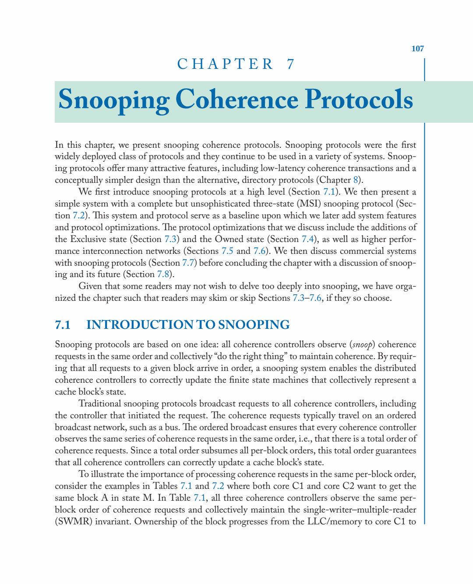
原书第 108 页PDF 130
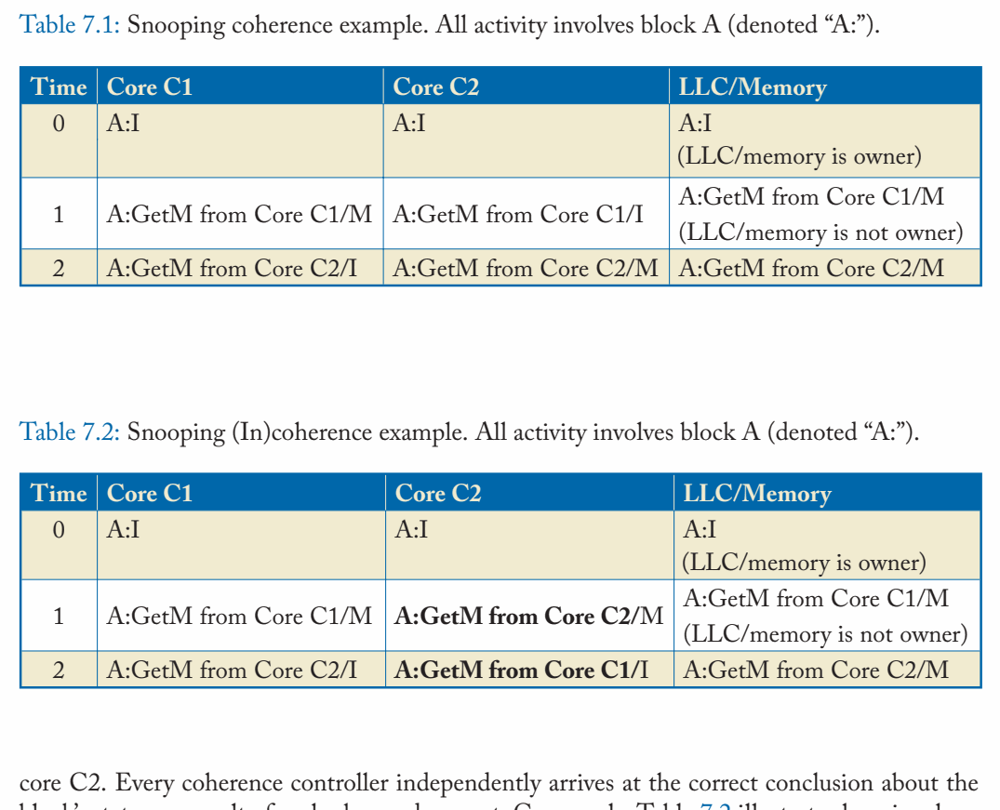
展开可搜索的英文文字
Time Core C1 Core C2 LLC/Memory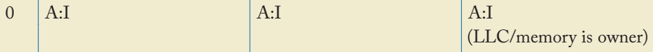
展开可搜索的英文文字
0 A:I A:I A:I (LLC/memory is owner)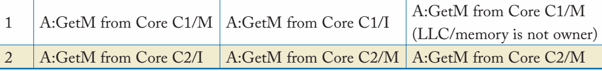
展开可搜索的英文文字
A:GetM from Core C1/M 1 A:GetM from Core C1/M A:GetM from Core C1/I (LLC/memory is not owner) 2 A:GetM from Core C2/I A:GetM from Core C2/M A:GetM from Core C2/M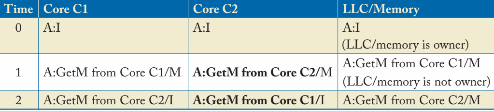
展开可搜索的英文文字
Time Core C1 Core C2 LLC/Memory 0 A:I A:I A:I (LLC/memory is owner) A:GetM from Core C1/M 1 A:GetM from Core C1/M A:GetM from Core C2/M (LLC/memory is not owner) 2 A:GetM from Core C2/I A:GetM from Core C1/I A:GetM from Core C2/MENGLISHcore C2. Every coherence controller independently arrives at the correct conclusion about the block’s state as a result of each observed request. Conversely, Table 7.2 illustrates how incoherence might arise if core C2 observes a different per-block order of requests than core C1 and the LLC/memory. First, we have a situation in which both core C1 and core C2 are simultaneously in state M, which violates the SWMR invariant. Next, we have a situation in which no coherence controller believes it is the owner and thus a coherence request at this time would not receive a response (perhaps resulting in deadlock).
中文核 C2。每个控制器都能根据观察到的请求，独立得出关于块状态的正确结论。相反，表 7.2 展示了 C2 观察到的逐块请求顺序与 C1 和 LLC/内存不同，如何导致不一致。首先，C1 和 C2 同时处于 M，违反 SWMR 不变量；随后，没有任何控制器认为自己是所有者，此时若出现请求，就不会得到响应，可能导致死锁。
ENGLISHTraditional snooping protocols create a total order of coherence requests across all blocks, even though coherence requires only a per-block order of requests. Having a total order makes it easier to implement memory consistency models that require a total order of memory references, such as SC and TSO. Consider the example in Table 7.3 which involves two blocks A and B; each block is requested exactly once and so the system trivially observes per-block request orders. Yet because cores C1 and C2 observe the GetM and GetS requests out-of-order, this execution violates both the SC and TSO memory consistency models.
中文传统监听协议为所有块的缓存一致性请求建立全序，尽管缓存一致性本身只要求每个块内部的请求有序。全序有利于实现要求内存访问全序的内存一致性模型，例如 SC 和 TSO。表 7.3 涉及 A、B 两个块；每个块恰好只被请求一次，因此逐块请求顺序自然成立。但由于 C1 和 C2 乱序观察到 GetM 和 GetS 请求，这次执行同时违反 SC 和 TSO。
查看 原书第 108 页 的完整原版面（PDF 130）
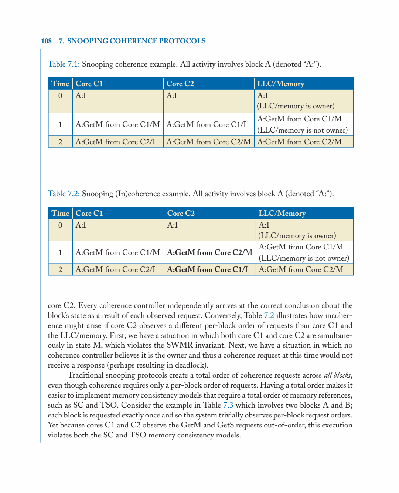
原书第 109 页PDF 131
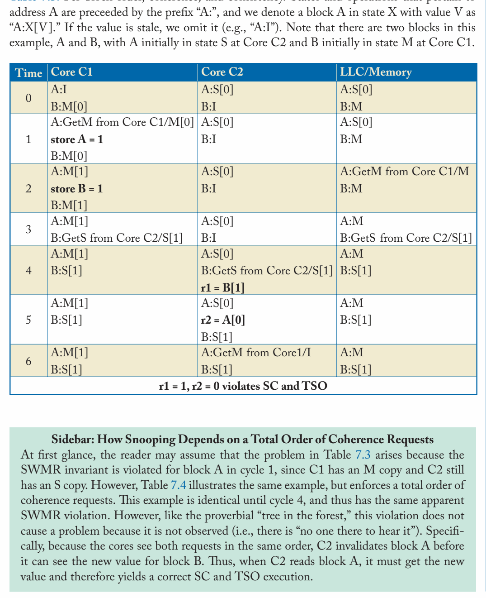
展开可搜索的英文文字
Time Core C1 Core C2 LLC/Memory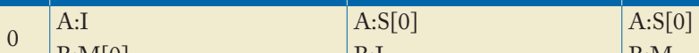
展开可搜索的英文文字
A:I A:S[0] A:S[0] 0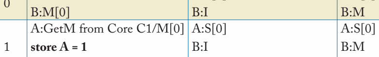
展开可搜索的英文文字
B:M[0] B:I B:M A:GetM from Core C1/M[0] A:S[0] A:S[0] 1 store A = 1 B:I B:M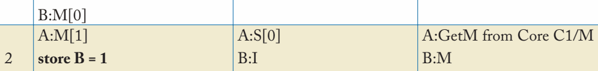
展开可搜索的英文文字
B:M[0] A:M[1] A:S[0] A:GetM from Core C1/M 2 store B = 1 B:I B:M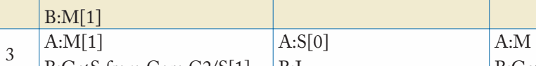
展开可搜索的英文文字
B:M[1] A:M[1] A:S[0] A:M 3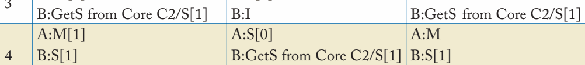
展开可搜索的英文文字
B:GetS from Core C2/S[1] B:I B:GetS from Core C2/S[1] A:M[1] A:S[0] A:M 4 B:S[1] B:GetS from Core C2/S[1] B:S[1]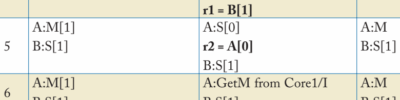
展开可搜索的英文文字
r1 = B[1] A:M[1] A:S[0] A:M 5 B:S[1] r2 = A[0] B:S[1] B:S[1] A:M[1] A:GetM from Core1/I A:M 6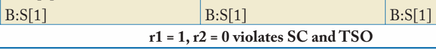
展开可搜索的英文文字
B:S[1] B:S[1] B:S[1] r1 = 1, r2 = 0 violates SC and TSOENGLISHSidebar: How Snooping Depends on a Total Order of Coherence Requests At first glance, the reader may assume that the problem in Table 7.3 arises because the SWMR invariant is violated for block A in cycle 1, since C1 has an M copy and C2 still has an S copy. However, Table 7.4 illustrates the same example, but enforces a total order of coherence requests. This example is identical until cycle 4, and thus has the same apparent SWMR violation. However, like the proverbial “tree in the forest,” this violation does not cause a problem because it is not observed (i.e., there is “no one there to hear it”). Specifically, because the cores see both requests in the same order, C2 invalidates block A before it can see the new value for block B. Thus, when C2 reads block A, it must get the new value and therefore yields a correct SC and TSO execution.
中文旁栏：监听协议如何依赖缓存一致性请求的全序
乍看之下，读者可能认为表 7.3 的问题在于周期 1 中 A 违反了 SWMR 不变量，因为 C1 持有 M 副本，而 C2 仍持有 S 副本。但表 7.4 给出了相同示例，只是强制请求全序；在周期 4 之前，两者完全相同，因而也存在表面上的 SWMR 违反。然而，就像“森林中倒下而无人听见的树”这一比喻，这种违反未被观察到，因此没有造成问题。具体而言，由于各核以相同顺序看到两个请求，C2 在看到 B 的新值之前就会使 A 无效。因此，C2 读取 A 时必须获取新值，执行结果便满足 SC 和 TSO。
乍看之下，读者可能认为表 7.3 的问题在于周期 1 中 A 违反了 SWMR 不变量，因为 C1 持有 M 副本，而 C2 仍持有 S 副本。但表 7.4 给出了相同示例，只是强制请求全序；在周期 4 之前，两者完全相同，因而也存在表面上的 SWMR 违反。然而，就像“森林中倒下而无人听见的树”这一比喻，这种违反未被观察到，因此没有造成问题。具体而言，由于各核以相同顺序看到两个请求，C2 在看到 B 的新值之前就会使 A 无效。因此，C2 读取 A 时必须获取新值，执行结果便满足 SC 和 TSO。
查看 原书第 109 页 的完整原版面（PDF 131）
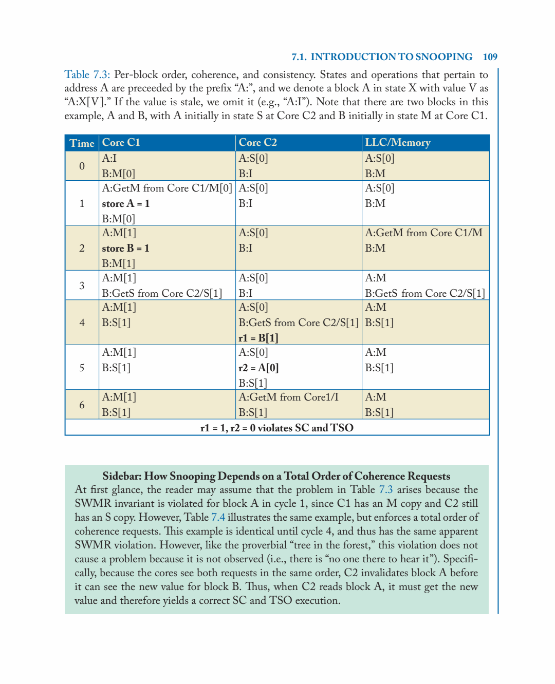
原书第 110 页PDF 132
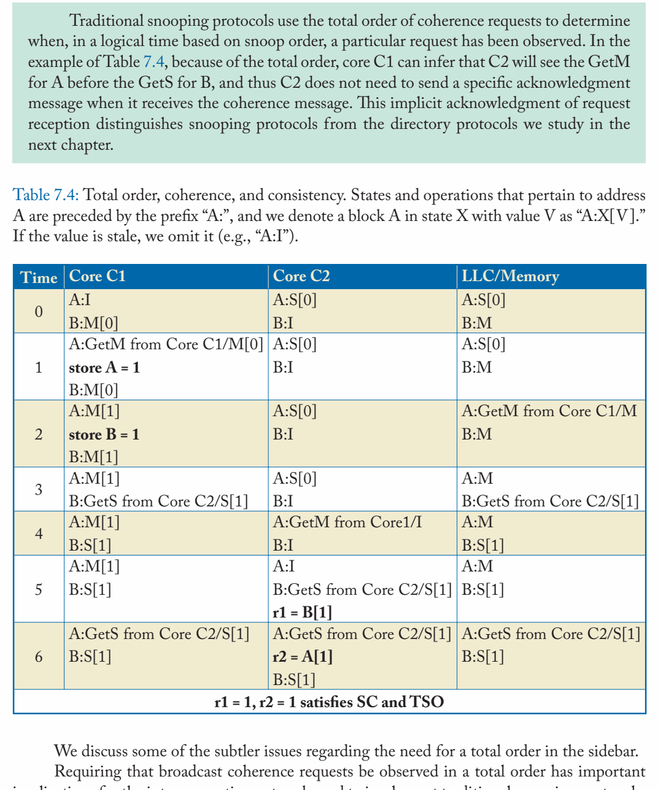
ENGLISHTraditional snooping protocols use the total order of coherence requests to determine when, in a logical time based on snoop order, a particular request has been observed. In the example of Table 7.4, because of the total order, core C1 can infer that C2 will see the GetM for A before the GetS for B, and thus C2 does not need to send a specific acknowledgment message when it receives the coherence message. This implicit acknowledgment of request reception distinguishes snooping protocols from the directory protocols we study in the next chapter.
中文传统监听协议利用缓存一致性请求的全序，以监听顺序定义逻辑时间，从而判断某个请求何时已被观察到。表 7.4 中，由于存在全序，C1 可以推断 C2 将先看到 A 的 GetM，再看到 B 的 GetS，因此 C2 收到缓存一致性消息时无须发送专门的确认消息。这种对请求接收的隐式确认，是监听协议区别于下一章目录协议的特征。
展开可搜索的英文文字
Time Core C1 Core C2 LLC/Memory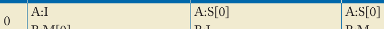
展开可搜索的英文文字
A:I A:S[0] A:S[0] 0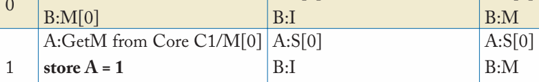
展开可搜索的英文文字
B:M[0] B:I B:M A:GetM from Core C1/M[0] A:S[0] A:S[0] 1 store A = 1 B:I B:M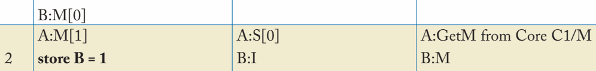
展开可搜索的英文文字
B:M[0] A:M[1] A:S[0] A:GetM from Core C1/M 2 store B = 1 B:I B:M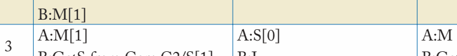
展开可搜索的英文文字
B:M[1] A:M[1] A:S[0] A:M 3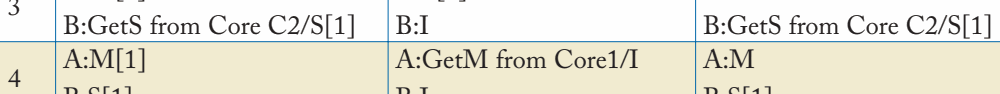
展开可搜索的英文文字
B:GetS from Core C2/S[1] B:I B:GetS from Core C2/S[1] A:M[1] A:GetM from Core1/I A:M 4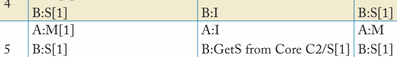
展开可搜索的英文文字
B:S[1] B:I B:S[1] A:M[1] A:I A:M 5 B:S[1] B:GetS from Core C2/S[1] B:S[1]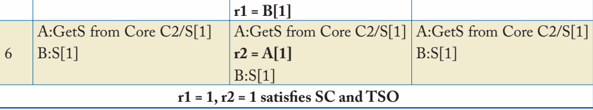
展开可搜索的英文文字
r1 = B[1] A:GetS from Core C2/S[1] A:GetS from Core C2/S[1] A:GetS from Core C2/S[1] 6 B:S[1] r2 = A[1] B:S[1] B:S[1] r1 = 1, r2 = 1 satisfi es SC and TSOENGLISHWe discuss some of the subtler issues regarding the need for a total order in the sidebar. Requiring that broadcast coherence requests be observed in a total order has important implications for the interconnection network used to implement traditional snooping protocols. Because many coherence controllers may simultaneously attempt to issue coherence requests,
中文旁栏讨论了全序要求中一些更微妙的问题。要求广播的缓存一致性请求按全序被观察到，会直接影响传统监听协议所采用的互连网络。因为多个控制器可能同时尝试发出请求，
查看 原书第 110 页 的完整原版面（PDF 132）
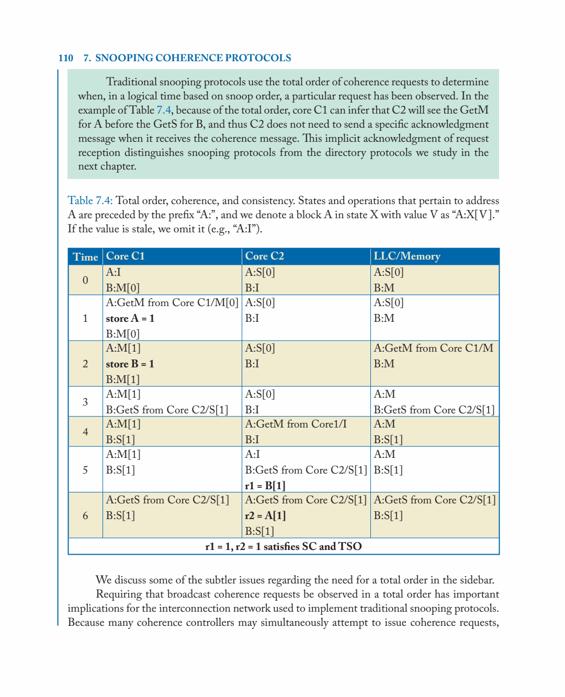
原书第 111 页PDF 133
ENGLISHthe interconnection network must serialize these requests into some total order. However the network determines this order, this mechanism becomes known as the protocol’s serialization (ordering) point. In the general case, a coherence controller issues a coherence request, the network orders that request at the serialization point and broadcasts it to all controllers, and the issuing controller learns where its request has been ordered by snooping the stream of requests it receives from the controller. As a concrete and simple example, consider a system which uses a bus to broadcast coherence requests. Coherence controllers must use arbitration logic to ensure that only a single request is issued on the bus at once. This arbitration logic acts as the serialization point because it effectively determines the order in which requests appear on the bus. A subtle but important point is that a coherence request is ordered the instant the arbitration logic serializes it, but a controller may only be able to determine this order by snooping the bus to observe which other requests appear before and after its own request. Thus, coherence controllers may observe the total request order several cycles after the serialization point determines it.
中文互连网络必须把这些请求串行化，形成某种全序。无论网络如何确定这一顺序，该机制都称为协议的串行化点（排序点）。一般而言，控制器发出请求后，网络在串行化点为其排序，再向所有控制器广播；发起控制器监听收到的请求流，从而获知自己请求的位置。一个简单具体的例子是用总线广播请求的系统：各控制器必须借助仲裁逻辑，确保总线上每次只发出一个请求。仲裁逻辑实际上决定请求出现在总线上的顺序，因此充当串行化点。一个微妙但重要的区别是：仲裁逻辑将请求串行化的瞬间，该请求的顺序就已确定；但控制器可能必须监听总线，观察哪些请求位于自身请求之前或之后，才能确定这一顺序。因此，各控制器可能在串行化点确定顺序数个周期之后才观察到请求全序。
ENGLISHThus far, we have discussed only coherence requests, but not the responses to these requests. The reason for this seeming oversight is that the key aspects of snooping protocols revolve around the requests. There are few constraints on response messages. They can travel on a separate interconnection network that does not need to support broadcast nor have any ordering requirements. Because response messages carry data and are thus much longer than requests, there are significant benefits to being able to send them on a simpler, lower-cost network. Notably, response messages do not affect the serialization of coherence transactions. Logically, a coherence transaction—which consists of a broadcast request and a unicast response—occurs when the request is ordered, regardless of when the response arrives at the requestor. The time interval between when the request appears on the bus and when the response arrives at the requestor does affect the implementation of the protocol (e.g., during this gap, are other controllers allowed to request this block? If so, how does the requestor respond?), but it does not affect the serialization of the transaction.1
中文到目前为止，我们只讨论了缓存一致性请求，尚未讨论响应。这看似遗漏，实际上是因为监听协议的关键围绕请求展开，而响应消息受到的约束很少。响应可以使用独立互连网络，该网络既无须支持广播，也没有排序要求。由于响应携带数据，比请求长得多，能够使用更简单、成本更低的网络具有明显优势。特别要注意，响应消息不影响缓存一致性事务的串行化。从逻辑上说，一个由广播请求和单播响应构成的事务，在请求完成排序时就已经发生，与响应何时到达请求方无关。从请求出现在总线上到响应到达请求方之间的时间间隔，确实会影响协议实现，例如此间其他控制器是否可以请求同一块，以及请求方应如何响应，但不会影响该事务的串行化。¹
ENGLISH7.2 BASELINE SNOOPING PROTOCOL
中文7.2 基准监听协议
ENGLISHIn this section, we present a straightforward, unoptimized snooping protocol and describe its implementation on two different system models. The first, simple system model illustrates the basic approach for implementing snooping coherence protocols. The second, modestly more complex baseline system model illustrates how even relatively simple performance improvements may impact coherence protocol complexity. These examples provide insight into the key features of snooping protocols while revealing inefficiencies that motivate the features and optimizations presented in subsequent sections of this chapter. Sections 7.5 and 7.6 discuss how to adapt this baseline protocol for more advanced system models.
中文本节给出一个直接、未经优化的监听协议，并说明它在两种系统模型中的实现。第一种简单模型展示实现监听协议的基本方法；第二种稍复杂的基准模型说明，即使较简单的性能改进，也会影响协议复杂度。这些示例既揭示监听协议的关键特征，也暴露其低效之处，从而引出本章后续特性与优化。7.5 和 7.6 节将讨论如何把该基准协议适配到更先进的系统模型。
ENGLISH1This logical serialization of coherence transactions is analogous to the logical serialization of instruction execution in processor cores. Even when a core performs out-of-order execution, it still commits (serializes) instructions in program order.
中文¹ 缓存一致性事务的这种逻辑串行化，与处理器核中指令执行的逻辑串行化类似。即使核乱序执行，仍会按程序顺序提交（串行化）指令。
查看 原书第 111 页 的完整原版面（PDF 133）
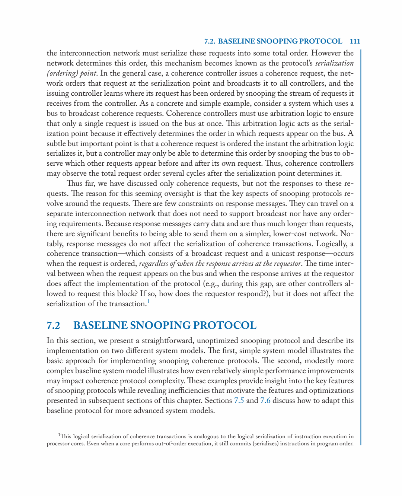
原书第 112 页PDF 134
ENGLISH7.2.1 HIGH-LEVEL PROTOCOL SPECIFICATION The baseline protocol has only three stable states: M, S, and I. Such a protocol is typically referred to as an MSI protocol. Like the protocol in Section 6.3, this protocol assumes a write-back cache. A block is owned by the LLC/memory unless the block is in a cache in state M. Before presenting the detailed specification, we first illustrate a higher level abstraction of the protocol in order to understand its fundamental behaviors. In Figures 7.1 and 7.2, we show the transitions between the stable states at the cache and memory controllers, respectively.
中文7.2.1 协议的高层规约
基准协议只有 M、S、I 三种稳定状态，通常称为 MSI 协议。与 6.3 节一样，该协议假设缓存采用写回策略。除非某个缓存中的块处于 M，否则块由 LLC/内存拥有。在给出详细规约前，我们先用更高层的抽象说明其基本行为。图 7.1 和图 7.2 分别展示缓存控制器和内存控制器处稳定状态之间的转移。
基准协议只有 M、S、I 三种稳定状态，通常称为 MSI 协议。与 6.3 节一样，该协议假设缓存采用写回策略。除非某个缓存中的块处于 M，否则块由 LLC/内存拥有。在给出详细规约前，我们先用更高层的抽象说明其基本行为。图 7.1 和图 7.2 分别展示缓存控制器和内存控制器处稳定状态之间的转移。
ENGLISHThere are three notational issues to be aware of. First, in Figure 7.1, the arcs are labeled with coherence requests that are observed on the bus. We intentionally omit other events, including loads, stores, and coherence responses. Second, the coherence events at the cache controller are labeled with either “Own” or “Other” to denote whether the cache controller observing the request is the requestor or not. Third, in Figure 7.2, we specify the state of a block at memory
中文有三点记号约定需要注意。第一，图 7.1 的弧标注的是在总线上观察到的缓存一致性请求，刻意省略 load、store 和缓存一致性响应等其他事件。第二，缓存控制器上的事件带有“Own”或“Other”前缀，表示观察请求的控制器是否就是请求方。第三，图 7.2 采用以缓存为中心的记号描述内存中的块状态，
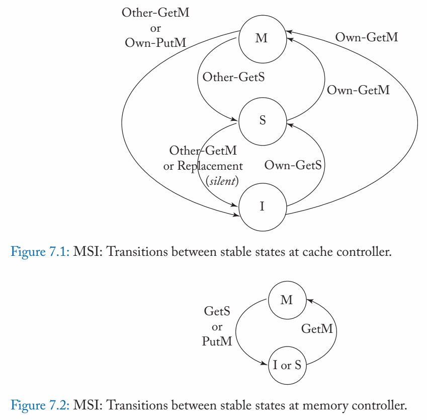
查看 原书第 112 页 的完整原版面（PDF 134）
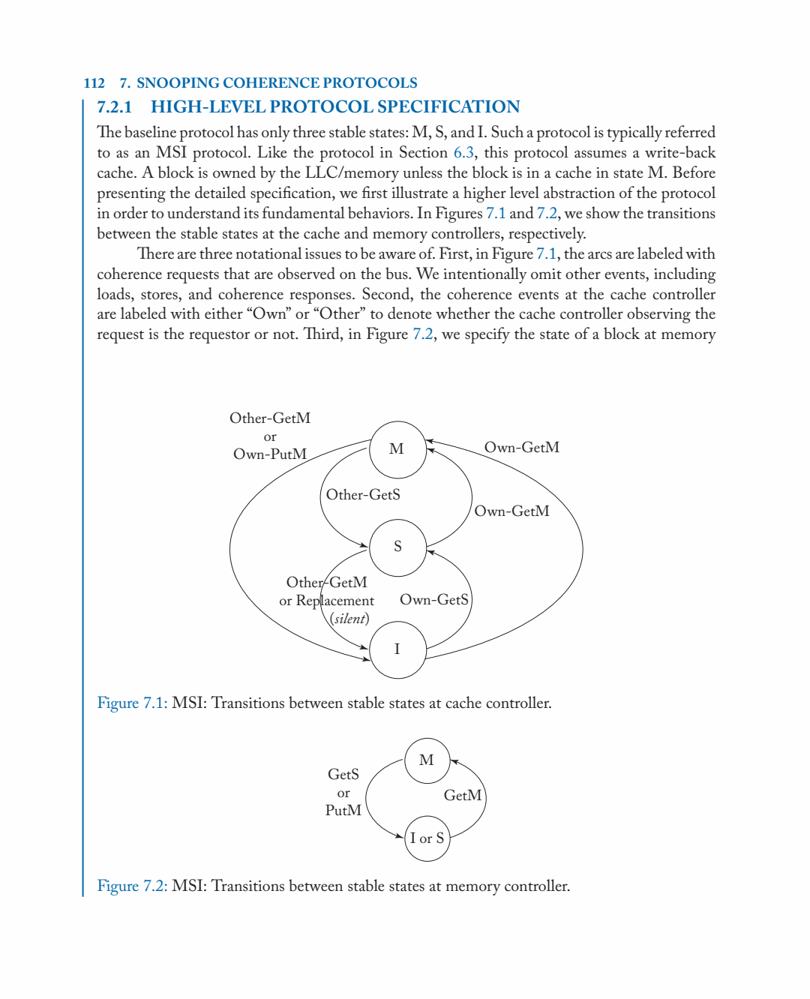
原书第 113 页PDF 135
ENGLISHusing a cache-centric notation (e.g., a memory state of M denotes that there exists a cache with the block in state M).
中文例如，内存状态 M 表示存在一个缓存，其中该块处于 M。
ENGLISH7.2.2 SIMPLE SNOOPING SYSTEM MODEL: ATOMIC REQUESTS, ATOMIC TRANSACTIONS
中文7.2.2 简单监听系统模型：原子请求、原子事务
ENGLISHFigure 7.3 illustrates the simple system model, which is nearly identical to the baseline system
中文图 7.3 给出了简单系统模型，它与图 2.1 引入的基准系统模型几乎相同。
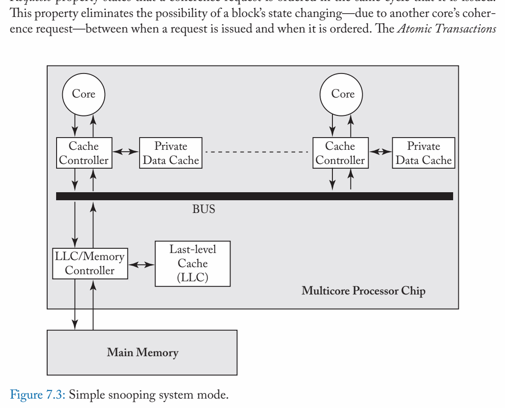
ENGLISHmodel introduced in Figure 2.1. The only difference is that the generic interconnection network from Figure 2.1 has been specified as a bus. Each core can issue load and store requests to its cache controller; the cache controller will choose a block to evict when it needs to make room for another block. The bus facilitates a total order of coherence requests that are snooped by all coherence controllers. Like the example in the previous chapter, this system model has atomicity properties that simplify the coherence protocol. Specifically, this system implements two atomicity properties which we define as Atomic Requests and Atomic Transactions. The Atomic Requests property states that a coherence request is ordered in the same cycle that it is issued. This property eliminates the possibility of a block’s state changing—due to another core’s coherence request—between when a request is issued and when it is ordered. The Atomic Transactions
中文唯一差别是将图 2.1 的通用互连网络具体化为总线。每个核可向缓存控制器发出 load 和 store 请求；缓存控制器需要为另一个块腾出空间时，选择一个块驱逐。总线为所有控制器监听到的请求提供全序。与前一章的例子相同，该模型具有简化协议的原子性属性。具体而言，它实现两种属性，称为“原子请求”和“原子事务”。原子请求要求缓存一致性请求在发出的同一周期完成排序，因此从请求发出到排序之间，不会因为另一个核的请求而改变块状态。原子事务
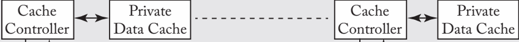
展开可搜索的英文文字
Cache Private Cache Private Controller Data Cache Controller Data Cache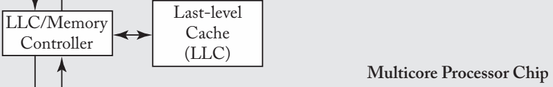
展开可搜索的英文文字
Last-level LLC/Memory Cache Controller (LLC) Multicore Processor Chip查看 原书第 113 页 的完整原版面（PDF 135）
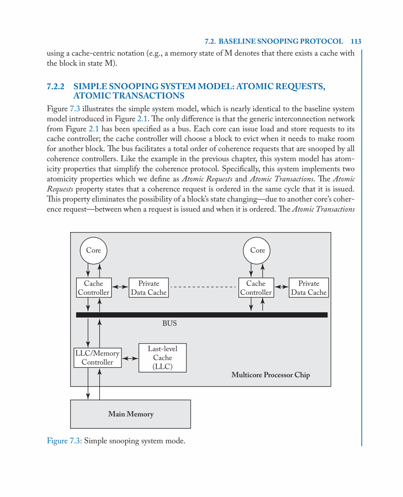
原书第 114 页PDF 136
ENGLISHproperty states that coherence transactions are atomic in that a subsequent request for the same block may not appear on the bus until after the first transaction completes (i.e., until after the response has appeared on the bus). Because coherence involves operations on a single block, whether or not the system permits subsequent requests to different blocks does not impact the protocol. Although simpler than most current systems, this system model resembles the SGI Challenge, a successful machine in the 1980s [5].
中文要求缓存一致性事务具有原子性：针对同一块的后续请求，必须等第一个事务完成，即响应已出现在总线上之后，才能出现在总线上。由于缓存一致性操作作用于单个块，系统是否允许针对其他块的后续请求不会影响协议。尽管该模型比多数当代系统更简单，它与 20 世纪 80 年代成功的 SGI Challenge 系统相似 [5]。
ENGLISHDetailed Protocol Specification Tables 7.5 and 7.6 present the detailed coherence protocol for the simple system model. Compared to the high-level description in Section 7.2.1, the most significant difference is the addition of two transient states in the cache controller and one in the memory controller. This protocol has very few transient states because the atomicity constraints of the simple system model greatly limit the number of possible message interleavings.
中文协议详细规约
表 7.5 和表 7.6 给出简单系统模型的详细协议。相较 7.2.1 节的高层描述，最明显的区别是缓存控制器增加了两种瞬态，内存控制器增加了一种瞬态。由于简单系统的原子性约束大幅限制了可能的消息交错，该协议的瞬态很少。
表 7.5 和表 7.6 给出简单系统模型的详细协议。相较 7.2.1 节的高层描述，最明显的区别是缓存控制器增加了两种瞬态，内存控制器增加了一种瞬态。由于简单系统的原子性约束大幅限制了可能的消息交错，该协议的瞬态很少。
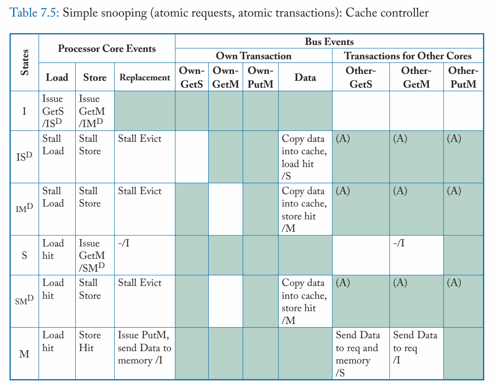
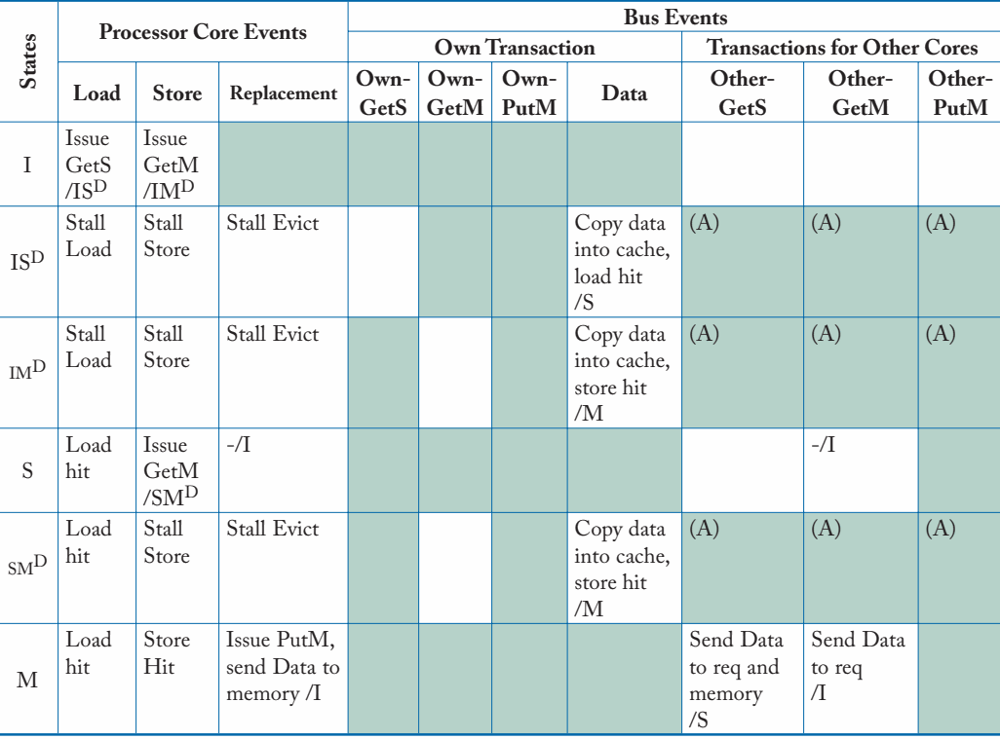
展开可搜索的英文文字
setatS Bus Events Processor Core Events Own Transaction Transactions for Other Cores Own- Own- Own- Other- Other- Other- Load Store Replacement Data GetS GetM PutM GetS GetM PutM Issue Issue I GetS GetM /ISD /IMD Stall Stall Stall Evict Copy data (A) (A) (A) Load Store into cache, ISD load hit /S Stall Stall Stall Evict Copy data (A) (A) (A) Load Store into cache, IMD store hit /M Load Issue -/I -/I S hit GetM /SMD Load Stall Stall Evict Copy data (A) (A) (A) hit Store into cache, SMD store hit /M Load Store Issue PutM, Send Data Send Data hit Hit send Data to to req and to req M memory /I memory /I /S查看 原书第 114 页 的完整原版面（PDF 136）
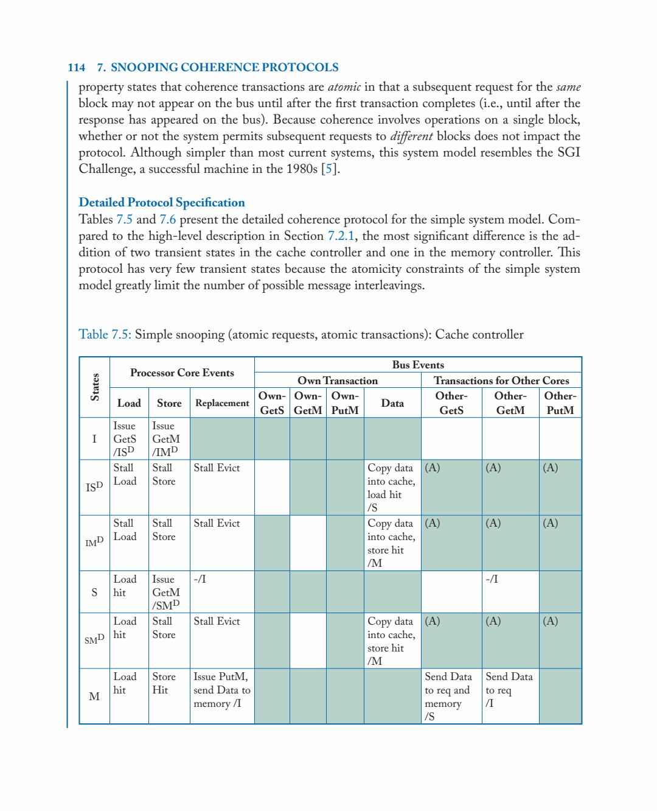
原书第 115 页PDF 137
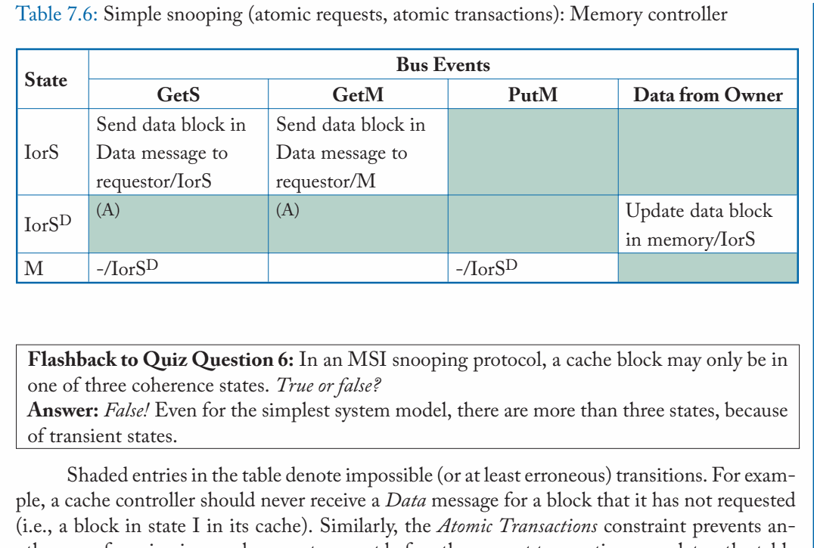
展开可搜索的英文文字
Bus Events State GetS GetM PutM Data from Owner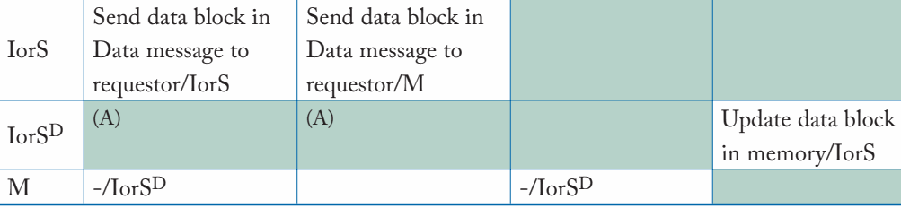
展开可搜索的英文文字
Send data block in Send data block in IorS Data message to Data message to requestor/IorS requestor/M (A) (A) Update data block IorSD in memory/IorS M -/IorSD -/IorSDENGLISHFlashback to Quiz Question 6: In an MSI snooping protocol, a cache block may only be in one of three coherence states. True or false? Answer: False! Even for the simplest system model, there are more than three states, because of transient states.
中文回顾测验第 6 题：在 MSI 监听协议中，一个缓存块只能处于三种缓存一致性状态之一，对还是错？答案：错！即使采用最简单的系统模型，由于存在瞬态，状态数量也超过三种。
ENGLISHShaded entries in the table denote impossible (or at least erroneous) transitions. For example, a cache controller should never receive a Data message for a block that it has not requested (i.e., a block in state I in its cache). Similarly, the Atomic Transactions constraint prevents another core from issuing a subsequent request before the current transaction completes; the table entries labeled “(A)” cannot occur due to this constraint. Blank entries denote legal transitions that require no action. These tables omit many implementation details that are not necessary for understanding the protocol. Also, in this protocol and the rest of the protocols in this chapter, we omit the event corresponding to Data for another core’s transaction; a core never takes any action in response to observing Data on the bus for another core’s transaction.
中文表中阴影条目表示不可能发生或至少属于错误的转移。例如，缓存控制器不应收到未曾请求的块的数据消息，即该块在本缓存中仍为 I。同样，原子事务约束禁止其他核在当前事务完成前发出后续请求，标为“（A）”的条目因此不可能发生。空白条目表示合法但无须采取动作的转移。表中省略了理解协议不必涉及的许多实现细节。本协议以及本章其余协议都省略了其他核事务的 Data 事件，因为核观察到总线上针对其他核事务的 Data 时，始终无须采取任何动作。
ENGLISHAs with all MSI protocols, loads may be performed (i.e., hit) in states S and M, while stores hit only in state M. On load and store misses, the cache controller initiates coherence transactions by sending GetS and GetM requests, respectively.2 The transient states ISD, IMD, and SMD indicate that the request message has been sent, but the data response (Data) has not yet been received. In these transient states, because the requests have already been ordered, the transactions have already been ordered and the block is logically in state S, M, or M, respectively. A load or store must wait for the Data to arrive, though.3 Once the data response appears on
中文与所有 MSI 协议一样，load 在 S 和 M 状态均可执行，即命中；store 只在 M 状态命中。load 和 store 未命中时，缓存控制器分别发送 GetS 和 GetM 请求，发起缓存一致性事务。² 瞬态 ISᴰ、IMᴰ、SMᴰ 表示请求已发出，但数据响应 Data 尚未收到。在这些瞬态中，请求已经排序，因而事务也已排序，块在逻辑上分别处于 S、M、M。不过，load 或 store 仍须等待 Data 到达。³ 一旦数据响应出现在
ENGLISH2We do not include an Upgrade transaction in this protocol, which would optimize the S-to-M transition by not needlessly sending data to the requestor. Adding an Upgrade would be fairly straightforward for this system model with Atomic Requests, but it is significantly more complicated without Atomic Requests. We discuss this issue when we present a protocol without Atomic Requests. 3Technically, a store may be performed as soon as the request is ordered, so long as the newly stored value is not overwritten when the Data arrives. Similarly, a subsequent load to a newly written value is permitted.
中文² 本协议没有加入 Upgrade 事务；该事务可避免向请求方发送不必要的数据，从而优化 S→M 转移。对于具有原子请求的模型，增加 Upgrade 相当直接；没有原子请求时，则复杂得多。介绍非原子请求协议时将讨论这一问题。
³ 严格来说，只要新写入值不会被随后到达的 Data 覆盖，请求完成排序后即可执行 store。此后对新写入值的 load 同样可以执行。
³ 严格来说，只要新写入值不会被随后到达的 Data 覆盖，请求完成排序后即可执行 store。此后对新写入值的 load 同样可以执行。
查看 原书第 115 页 的完整原版面（PDF 137）
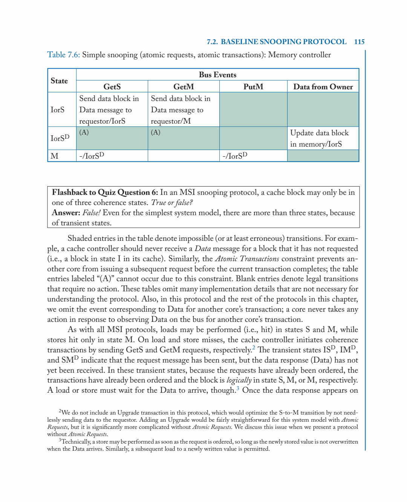
原书第 116 页PDF 138
ENGLISHthe bus, the cache controller can copy the data block into the cache, transition to stable state S or M, as appropriate, and perform the pending load or store.
中文总线上，缓存控制器就能将数据块复制到缓存，根据情况转为稳定状态 S 或 M，并执行待完成的 load 或 store。
ENGLISHThe system model’s atomicity properties simplify cache miss handling in two ways. First, the Atomic Requests property ensures that when a cache controller seeks to upgrade permissions to a block—to go from I to S, I to M, or S to M—it can issue a request without worrying that another core’s request might be ordered ahead of its own. Thus, the cache controller can transition immediately to state ISD, IMD, or SMD, as appropriate, to wait for a data response. Similarly, the Atomic Transactions property ensures that no subsequent requests for a block will occur until after the current transaction completes, eliminating the need to handle requests from other cores while in one of these transient states.
中文模型的原子性从两个方面简化了未命中处理。第一，原子请求保证缓存控制器升级块权限，即 I→S、I→M 或 S→M 时，发出请求后无须担心其他核的请求排在自身请求之前。因此，控制器可立即转入相应的 ISᴰ、IMᴰ 或 SMᴰ，等待数据响应。第二，原子事务保证当前事务完成前不会出现该块的后续请求，因此处于这些瞬态时无须处理其他核的请求。
ENGLISHA data response may come from either the memory controller or another cache that has the block in state M. A cache that has a block in state S can ignore GetS requests because the memory controller is required to respond, but must invalidate the block on GetM requests to enforce the coherence invariant. A cache that has a block in state M must respond to both GetS and GetM requests, sending a data response and transitioning to state S or state I, respectively.
中文数据响应可以来自内存控制器，也可以来自持有 M 块的另一缓存。持有 S 块的缓存可以忽略 GetS，因为内存控制器必须响应；但遇到 GetM 时必须使该块无效，以满足缓存一致性不变量。持有 M 块的缓存必须响应 GetS 和 GetM：发送数据响应，并分别转为 S 或 I。
ENGLISHThe LLC/memory has two stable states, M and IorS, and one transient state IorSD. In state IorS, the memory controller is the owner and responds to both GetS and GetM requests because this state indicates that no cache has the block in state M. In state M, the memory controller does not respond with data because the cache in state M is the owner and has the most recent copy of the data. However, a GetS in state M means that the cache controller will transition to state S, so the memory controller must also get the data, update memory, and begin responding to all future requests. It does this by transitioning immediately to the transient state IorSD and waits until it receives the data from the cache that owns it.
中文LLC/内存具有 M 和 IorS 两种稳定状态，以及 IorSᴰ 一种瞬态。在 IorS 下，内存控制器是所有者，响应 GetS 和 GetM，因为此状态意味着没有缓存以 M 状态持有该块。在 M 下，内存控制器不返回数据，因为持有 M 块的缓存才是所有者，持有最新副本。不过，M 下收到 GetS 意味着该缓存将转为 S，因此内存控制器也必须取得数据、更新内存，并开始响应以后所有请求。为此，它立即转入 IorSᴰ，等待所有者缓存发来的数据。
ENGLISHWhen the cache controller evicts a block due to a replacement decision, this leads to the protocol’s two possible coherence downgrades: from S to I and from M to I. In this protocol, the S-to-I downgrade is performed “silently” in that the block is evicted from the cache without any communication with the other coherence controllers. In general, silent state transitions are possible only when all other coherence controllers’ behavior remains unchanged; for example, a silent eviction of an owned block is not allowable. The M-to-I downgrade requires communication because the M copy of the block is the only valid copy in the system and cannot simply be discarded. Thus, another coherence controller (i.e., the memory controller) must change its state. To replace a block in state M, the cache controller issues a PutM request on the bus and then sends the data back to the memory controller. At the LLC, the block enters state IorSD when the PutM request arrives, then transitions to state IorS when the Data message arrives.4 The Atomic Requests property simplifies the cache controller, by preventing an intervening request that might downgrade the state (e.g., another core’s GetM request) before the PutM gets ordered on the bus. Similarly, the Atomic Transactions property simplifies the memory controller
中文缓存控制器因替换决策驱逐块时，会产生两种可能的权限降级：S→I 和 M→I。本协议中 S→I 是“静默”的，即驱逐块时无须与其他控制器通信。一般而言，只有其他所有控制器的行为均不改变时，状态转移才可以静默进行；例如，具有所有权的块不能静默驱逐。M→I 必须通信，因为该 M 副本是系统中唯一有效副本，不能直接丢弃。因此，另一个控制器，即内存控制器，必须改变状态。替换 M 块时，缓存控制器先在总线上发出 PutM，再将数据发回内存控制器。LLC 中的块在 PutM 到达时进入 IorSᴰ，在 Data 到达时转为 IorS。⁴ 原子请求禁止其他请求在 PutM 排序前插入并降低块状态，例如来自其他核的 GetM，因此简化了缓存控制器。同样，原子事务禁止
ENGLISH4We make the simplifying assumption that these messages cannot arrive out of order at the memory controller.
中文⁴ 为简化讨论，这里假设这些消息不会在内存控制器处乱序到达。
查看 原书第 116 页 的完整原版面（PDF 138）
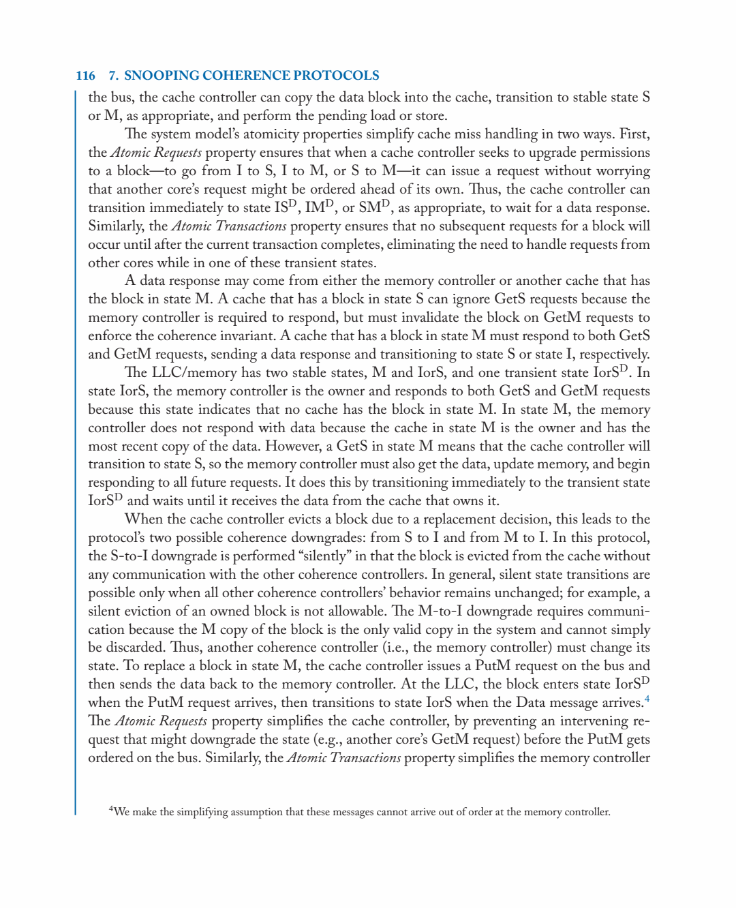
原书第 117 页PDF 139
ENGLISHby preventing other requests for the block until the PutM transaction completes and the memory controller is ready to respond to them.
中文该块的其他请求在 PutM 事务完成、内存控制器做好响应准备之前出现，因此简化了内存控制器。
ENGLISHRunning Example In this section, we present an example execution of the system to show how the coherence protocol behaves in a common scenario. We will use this example in subsequent sections both to understand the protocols and also to highlight differences between them. The example includes activity for just one block, and initially, the block is in state I in all caches and in state IorS at the LLC/memory.
中文贯穿示例
本节给出一次系统执行，展示协议在常见场景中的行为。后续各节会反复使用这一示例，以帮助理解协议并突出协议之间的差异。示例只涉及一个块；初始时，它在所有缓存中均为 I，在 LLC/内存中为 IorS。
本节给出一次系统执行，展示协议在常见场景中的行为。后续各节会反复使用这一示例，以帮助理解协议并突出协议之间的差异。示例只涉及一个块；初始时，它在所有缓存中均为 I，在 LLC/内存中为 IorS。
ENGLISHIn this example, illustrated in Table 7.7, cores C1 and C2 issue load and store instructions, respectively, that miss on the same block. Core C1 attempts to issue a GetS and core C2 attempts to issue a GetM. We assume that core C1’s request happens to get serialized first and the Atomic Transactions property prevents core C2’s request from reaching the bus until C1’s request completes. The memory controller responds to C1 to complete the transaction on cycle 3. Then, core C2’s GetM is serialized on the bus; C1 invalidates its copy and the memory controller responds to C2 to complete that transaction. Lastly, C1 issues another GetS. C2, the owner, responds with the data and changes its state to S. C2 also sends a copy of the data to the memory controller because the LLC/memory is now the owner and needs an up-to-date copy of the block. At the end of this execution, C1 and C2 are in state S and the LLC/memory is in state IorS.
中文如表 7.7 所示，C1 和 C2 分别执行 load 和 store 指令，均在同一块上未命中。C1 尝试发出 GetS，C2 尝试发出 GetM。假设 C1 的请求先完成串行化，原子事务约束使 C2 的请求必须等 C1 的请求完成后才能进入总线。内存控制器在周期 3 响应 C1，结束事务。接着，C2 的 GetM 在总线上串行化；C1 使副本无效，内存控制器响应 C2，结束该事务。最后，C1 再发出一个 GetS。所有者 C2 返回数据并转为 S；C2 同时向内存控制器发送数据副本，因为 LLC/内存此时成为所有者，需要最新副本。执行结束时，C1、C2 均为 S，LLC/内存为 IorS。
ENGLISH7.2.3 BASELINE SNOOPING SYSTEM MODEL: NON-ATOMIC REQUESTS, ATOMIC TRANSACTIONS The baseline snooping system model, which we use for most of the rest of this chapter, differs from the simple snooping system model by permitting non-atomic requests. Non-atomic requests arise from a number of implementation optimizations, but most commonly due to inserting a message queue (or even a single buffer) between the cache controller and the bus. By separating when a request is issued from when it is ordered, the protocol must address a window of vulnerability that did not exist in the simple snooping system. The baseline snooping system model preserves the Atomic Transactions property, which we do not relax until Section 7.5.
中文7.2.3 基准监听系统模型：非原子请求、原子事务
本章后续大部分内容采用的基准监听模型，与简单模型的差别在于允许非原子请求。非原子请求可由多种实现优化产生，最常见的原因是在缓存控制器与总线之间加入消息队列，哪怕只是一个缓冲项。请求的发出时刻与排序时刻分离后，协议必须处理简单模型中不存在的竞争窗口。基准模型仍保留原子事务，直到 7.5 节才放宽此约束。
本章后续大部分内容采用的基准监听模型，与简单模型的差别在于允许非原子请求。非原子请求可由多种实现优化产生，最常见的原因是在缓存控制器与总线之间加入消息队列，哪怕只是一个缓冲项。请求的发出时刻与排序时刻分离后，协议必须处理简单模型中不存在的竞争窗口。基准模型仍保留原子事务，直到 7.5 节才放宽此约束。
ENGLISHWe present the detailed protocol specification, including all transient states, in Tables 7.8 and 7.9. Compared to the protocol for the simple snooping system in Section 7.2.2, the most significant difference is the much larger number of transient states. Relaxing the Atomic Requests property introduces numerous situations in which a cache controller observes a request from another controller on the bus in between issuing its coherence request and observing its own coherence request on the bus.
中文表 7.8 和表 7.9 给出了包含全部瞬态的详细规约。与 7.2.2 节简单模型的协议相比，最显著的区别是瞬态数量大幅增加。放宽原子请求后，会出现多种情况：控制器已经发出自身请求，但尚未在总线上观察到它，此间却先观察到另一个控制器的请求。
ENGLISHTaking the I-to-S transition as an example, the cache controller issues a GetS request and changes the block’s state from I to ISAD. Until the requesting cache controller’s own GetS is observed on the bus and serialized, the block’s state is effectively I. That is, the requestor’s
中文以 I→S 为例，缓存控制器发出 GetS，并将块从 I 转为 ISᴬᴰ。在它自己的 GetS 被总线观察到并完成串行化之前，块实质上仍处于 I。也就是说，请求方的
查看 原书第 117 页 的完整原版面（PDF 139）
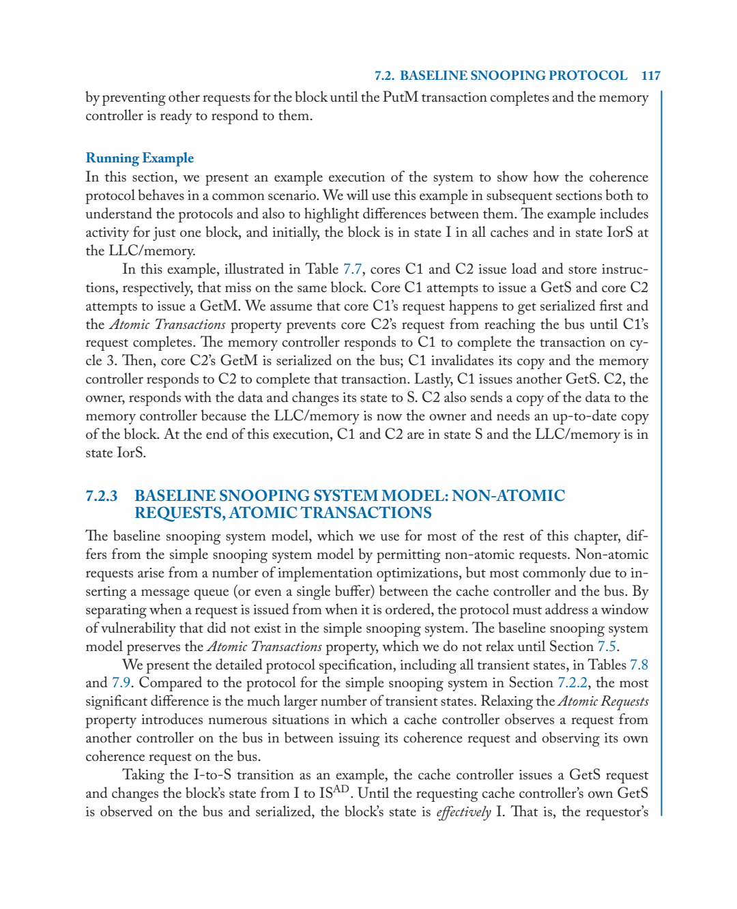
原书第 118 页PDF 140
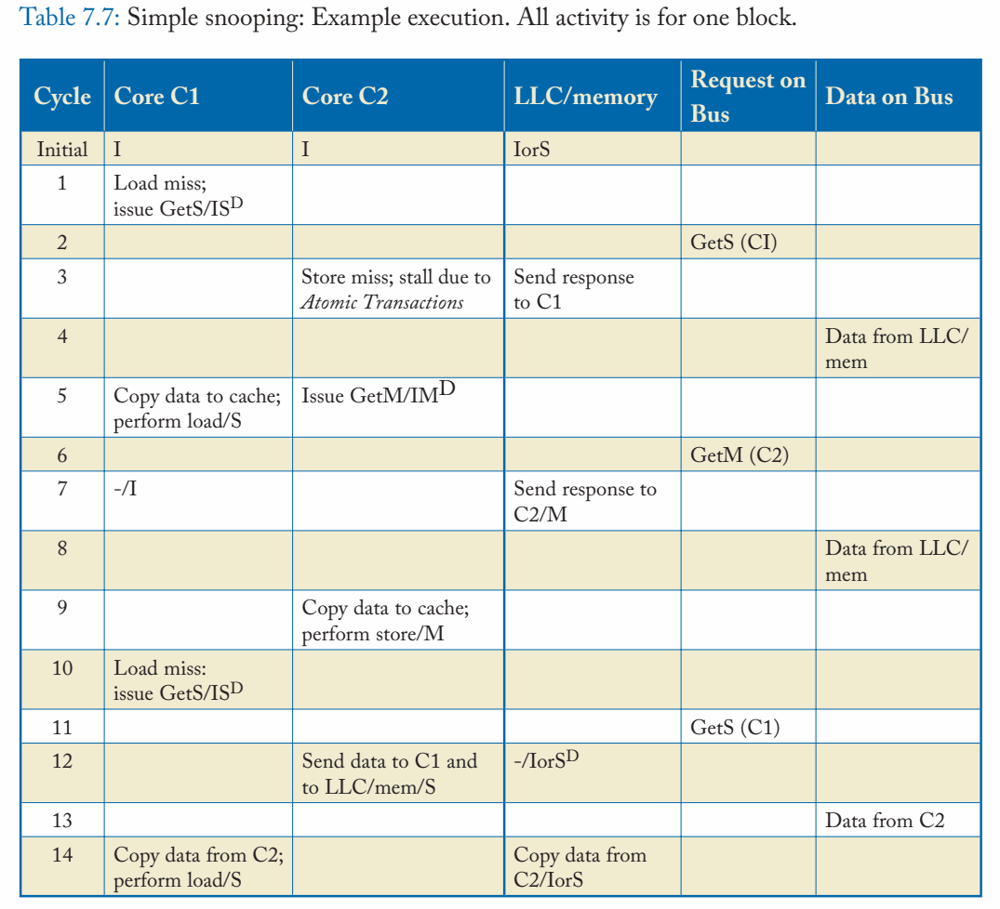
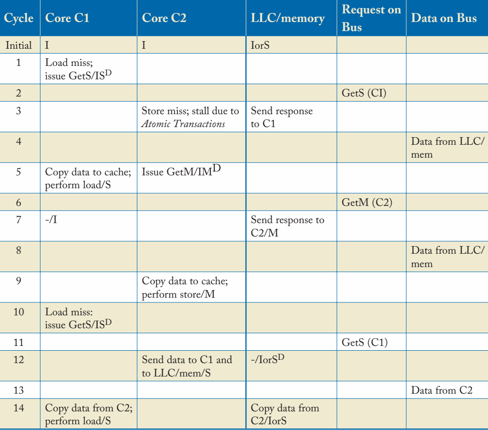
展开可搜索的英文文字
Request on Cycle Core C1 Core C2 LLC/memory Data on Bus Bus Initial I I IorS 1 Load miss; issue GetS/ISD 2 GetS (CI) 3 Store miss; s tall due to Send response Atomic Transactions to C1 4 Data from LLC/ mem 5 Copy data to cache; Issue GetM/IMD perform load/S 6 GetM (C2) 7 -/I Send response to C2/M 8 Data from LLC/ mem 9 Copy data to cache; perform store/M 10 Load miss: issue GetS/ISD 11 GetS (C1) 12 Send data to C1 and -/IorSD to LLC/mem/S 13 Data from C2 14 Copy data from C2; Copy data from perform load/S C2/IorSENGLISHblock is treated as if it were in I; loads and stores cannot be performed and coherence requests from other nodes must be ignored. Once the requestor observes its own GetS, the request is ordered and block is logically S, but loads cannot be performed because the data has not yet arrived. The cache controller changes the block’s state to ISD and waits for the data response from the previous owner. Because of the Atomic Transactions property, the data message is the next coherence message (to the same block). Once the data response arrives, the transaction is complete and the requestor changes the block’s state to the stable S state and performs the load. The I-to-M transition proceeds similarly to this I-to-S transition.
中文块按照 I 处理：不能执行 load 和 store，并且必须忽略其他节点的请求。请求方观察到自身 GetS 后，请求完成排序，块在逻辑上成为 S；但由于数据尚未到达，仍不能执行 load。缓存控制器将块改为 ISᴰ，等待前任所有者的数据响应。根据原子事务属性，针对同一块的下一条缓存一致性消息必然是数据消息。数据响应到达后，事务结束，请求方将块转为稳定状态 S，并执行 load。I→M 的过程与 I→S 类似。
查看 原书第 118 页 的完整原版面（PDF 140）
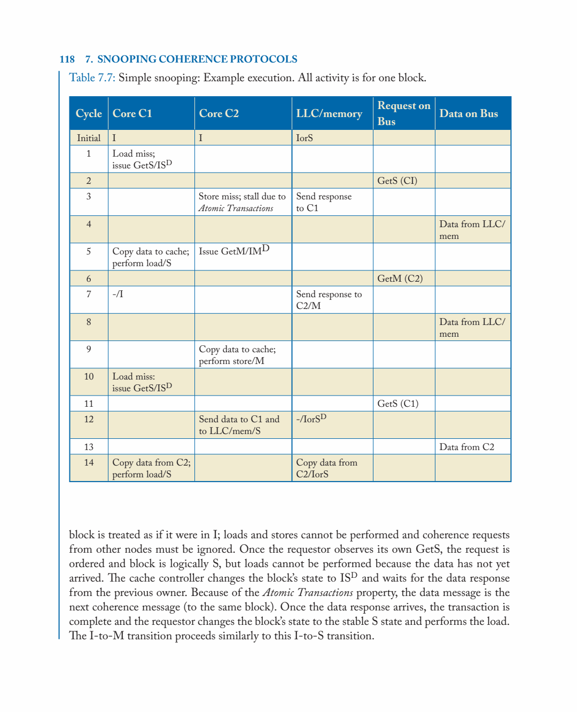
原书第 119 页PDF 141
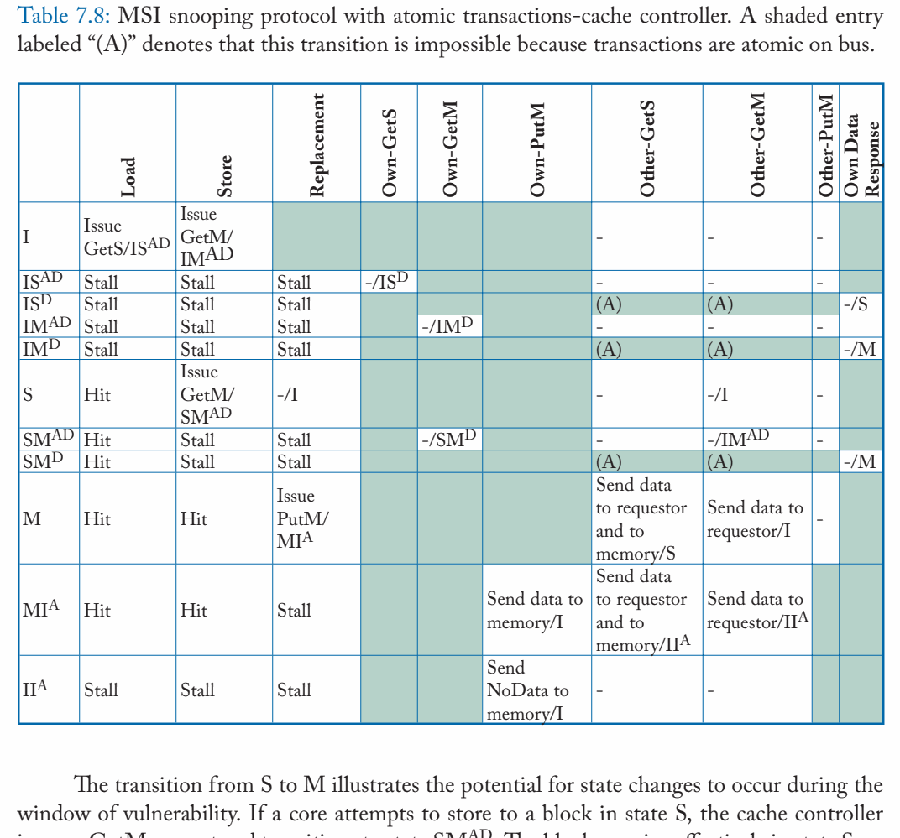
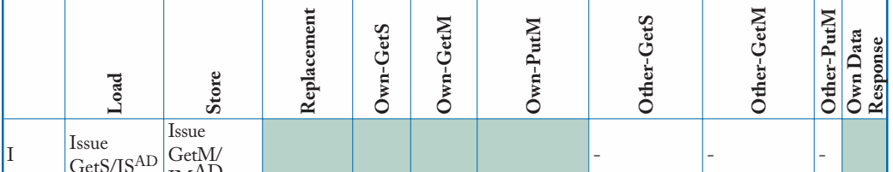
展开可搜索的英文文字
daoL erotS tnemecalpeR SteG-nwO MteG-nwO MtuP-nwO SteG-rehtO MteG-rehtO MtuP-rehtO ataD nwO esnopseR Issue Issue I GetM/ - - -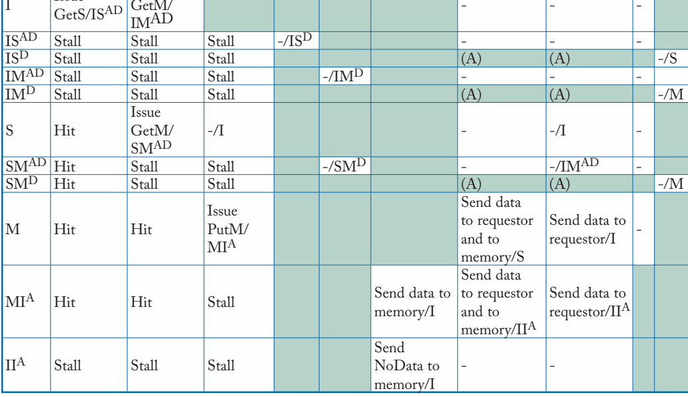
展开可搜索的英文文字
GetS/ISAD IMAD ISAD Stall Stall Stall -/ISD - - - ISD Stall Stall Stall (A) (A) -/S IMAD Stall Stall Stall -/IMD - - - IMD Stall Stall Stall (A) (A) -/M Issue S Hit GetM/ -/I - -/I - SMAD SMAD Hit Stall Stall -/SMD - -/IMAD - SMD Hit Stall Stall (A) (A) -/M Send data Issue to requestor Send data to M Hit Hit PutM/ and to requestor/I MIA memory/S Send data Send data to to requestor Send data to MIA Hit Hit Stall memory/I and to requestor/IIA memory/IIA Send IIA Stall Stall Stall NoData to - memory/IENGLISHThe transition from S to M illustrates the potential for state changes to occur during the window of vulnerability. If a core attempts to store to a block in state S, the cache controller issues a GetM request and transitions to state SMAD. The block remains effectively in state S, so loads may continue to hit and the controller ignores GetS requests from other cores. However, if another core’s GetM request gets ordered first, the cache controller must transition the state to IMAD to prevent further load hits. The window of vulnerability during the S-to-M transition complicates the addition of an Upgrade transaction, as we discuss in the sidebar.
中文S→M 展示了竞争窗口中状态变化的可能性。核尝试向 S 块执行 store 时，缓存控制器发出 GetM 并转为 SMᴬᴰ。此时块实质上仍为 S，因此 load 仍可命中，控制器也忽略其他核的 GetS。但是，如果另一个核的 GetM 先完成排序，控制器就必须转为 IMᴬᴰ，禁止后续 load 命中。S→M 期间的竞争窗口，使增加 Upgrade 事务变得复杂，旁栏将讨论这一问题。
查看 原书第 119 页 的完整原版面（PDF 141）
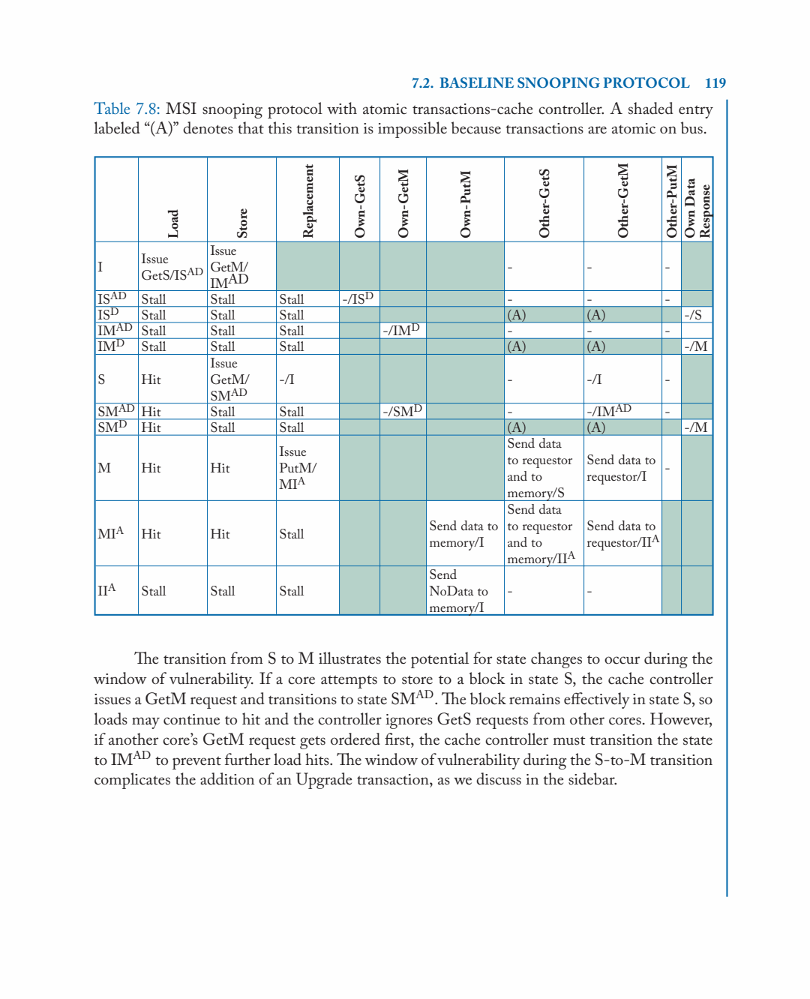
原书第 120 页PDF 142
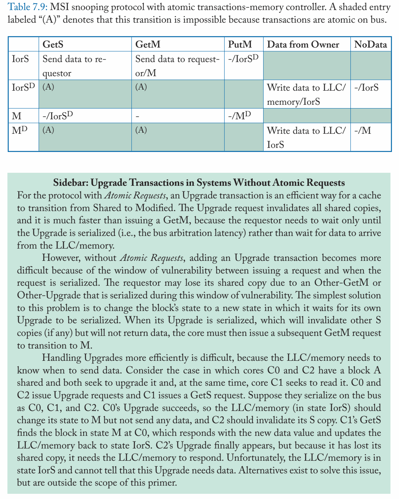
展开可搜索的英文文字
GetS GetM PutM Data from Owner NoData IorS Send data to re- Send data to request- -/IorSD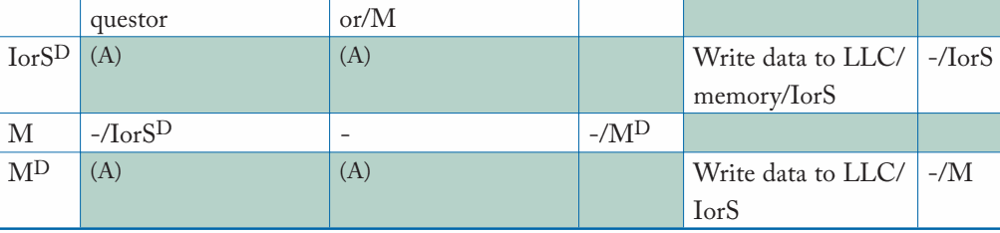
展开可搜索的英文文字
questor or/M IorSD (A) (A) Write data to LLC/ -/IorS memory/IorS M -/IorSD - -/MD MD (A) (A) Write data to LLC/ -/M IorSENGLISHSidebar: Upgrade Transactions in Systems Without Atomic Requests For the protocol with Atomic Requests, an Upgrade transaction is an efficient way for a cache to transition from Shared to Modified. The Upgrade request invalidates all shared copies, and it is much faster than issuing a GetM, because the requestor needs to wait only until the Upgrade is serialized (i.e., the bus arbitration latency) rather than wait for data to arrive from the LLC/memory.
中文旁栏：没有原子请求的系统中的 Upgrade 事务
在具有原子请求的协议中，Upgrade 是缓存从 Shared 转为 Modified 的高效方式。Upgrade 请求使所有共享副本无效，并且比 GetM 快得多，因为请求方只需等 Upgrade 完成串行化，即等待总线仲裁延迟，无须等待 LLC/内存的数据到达。
在具有原子请求的协议中，Upgrade 是缓存从 Shared 转为 Modified 的高效方式。Upgrade 请求使所有共享副本无效，并且比 GetM 快得多，因为请求方只需等 Upgrade 完成串行化，即等待总线仲裁延迟，无须等待 LLC/内存的数据到达。
ENGLISHHowever, without Atomic Requests, adding an Upgrade transaction becomes more difficult because of the window of vulnerability between issuing a request and when the request is serialized. The requestor may lose its shared copy due to an Other-GetM or Other-Upgrade that is serialized during this window of vulnerability. The simplest solution to this problem is to change the block’s state to a new state in which it waits for its own Upgrade to be serialized. When its Upgrade is serialized, which will invalidate other S copies (if any) but will not return data, the core must then issue a subsequent GetM request to transition to M.
中文没有原子请求时，请求发出与串行化之间存在竞争窗口，因而增加 Upgrade 更困难。请求方可能因窗口内先串行化的 Other-GetM 或 Other-Upgrade 而失去共享副本。最简单的解决办法是把块转入一个新状态，等待自身 Upgrade 完成串行化。当 Upgrade 串行化时，它会使其他 S 副本（如果存在）无效，但不会返回数据；此时核必须再发出 GetM，才能转为 M。
ENGLISHHandling Upgrades more efficiently is difficult, because the LLC/memory needs to know when to send data. Consider the case in which cores C0 and C2 have a block A shared and both seek to upgrade it and, at the same time, core C1 seeks to read it. C0 and C2 issue Upgrade requests and C1 issues a GetS request. Suppose they serialize on the bus as C0, C1, and C2. C0’s Upgrade succeeds, so the LLC/memory (in state IorS) should change its state to M but not send any data, and C2 should invalidate its S copy. C1’s GetS finds the block in state M at C0, which responds with the new data value and updates the LLC/memory back to state IorS. C2’s Upgrade finally appears, but because it has lost its shared copy, it needs the LLC/memory to respond. Unfortunately, the LLC/memory is in state IorS and cannot tell that this Upgrade needs data. Alternatives exist to solve this issue, but are outside the scope of this primer.
中文更高效地处理 Upgrade 很困难，因为 LLC/内存必须知道何时需要发送数据。考虑 C0、C2 共享 A 并同时希望升级，C1 同时希望读取 A。C0、C2 发出 Upgrade，C1 发出 GetS，假设总线排序为 C0、C1、C2。C0 的 Upgrade 成功，因此 IorS 状态的 LLC/内存应转为 M，但不发数据；C2 应使其 S 副本无效。C1 的 GetS 在 C0 找到 M 块，C0 返回新值，并更新 LLC/内存，使其回到 IorS。最后 C2 的 Upgrade 到达，但 C2 已失去共享副本，因此需要 LLC/内存响应。不幸的是，LLC/内存处于 IorS，无法判断这次 Upgrade 需要数据。存在其他解决方案，但超出了本书范围。
查看 原书第 120 页 的完整原版面（PDF 142）
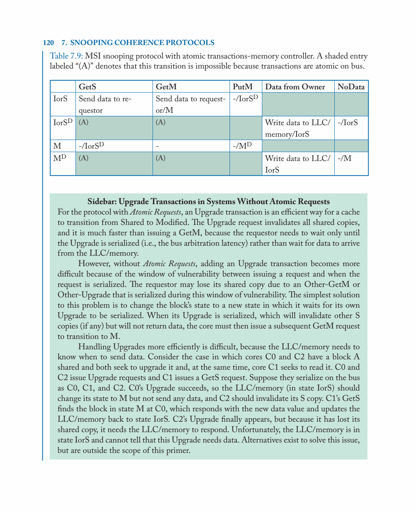
原书第 121 页PDF 143
ENGLISHThe window of vulnerability also affects the M-to-I coherence downgrade, in a much more significant way. To replace a block in state M, the cache controller issues a PutM request and changes the block state to MIA; unlike the protocol in Section 7.2.2, it does not immediately send the data to the memory controller. Until the PutM is observed on the bus, the block’s state is effectively M and the cache controller must respond to other cores’ coherence requests for the block. In the case where no intervening coherence requests arrive, the cache controller responds to observing its own PutM by sending the data to the memory controller and changing the block state to state I. If an intervening GetS or GetM request arrives before the PutM is ordered, the cache controller must respond as if it were in state M and then transition to state IIA to wait for its PutM to appear on the bus. Once it sees its PutM, intuitively, the cache controller should simply transition to state I because it has already given up ownership of the block. Unfortunately, doing so will leave the memory controller stuck in a transient state because it also receives the PutM request. Nor can the cache controller simply send the data anyway because doing so might overwrite valid data.5 The solution is for the cache controller to send a special NoData message to the memory controller when it sees its PutM while in state IIA. The NoData message indicates to the memory controller that it is coming from a non-owner and lets the memory controller exit its transient state. The memory controller is further complicated by needing to know which stable state it should return to if it receives a NoData message. We solve this problem by adding a second transient memory state MD. Note that these transient states represent an exception to our usual transient state naming convention. In this case, state XD indicates that the memory controller should revert to state X when it receives a NoData message (and move to state IorS if it receives a data message).
中文竞争窗口对 M→I 降级的影响更大。替换 M 块时，缓存控制器发出 PutM，并将块转为 MIᴬ；与 7.2.2 节不同，它不会立即向内存发送数据。在总线上观察到 PutM 之前，块实质上仍为 M，控制器必须响应其他核的请求。若没有中间插入的请求，观察到 Own-PutM 后，控制器将数据发往内存并转为 I。若 GetS 或 GetM 在 PutM 排序前到达，控制器必须按 M 状态响应，然后转为 IIᴬ，等待自身 PutM 出现在总线上。直觉上，看到 PutM 后应直接转为 I，因为它已交出所有权；但这样会使同样收到 PutM 的内存控制器困在瞬态中。缓存控制器也不能照常发送数据，因为可能覆盖有效数据。⁵ 解决方法是：缓存控制器在 IIᴬ 中看到 Own-PutM 时，向内存发送特殊的 NoData 消息，说明它来自非所有者，让内存控制器退出瞬态。内存控制器还必须知道收到 NoData 后应回到哪个稳定状态，因此进一步增加瞬态 Mᴰ。这里的瞬态命名是通常命名规则的例外：Xᴰ 表示收到 NoData 后应返回 X，收到数据消息则转为 IorS。
ENGLISH7.2.4 RUNNING EXAMPLE Returning to the running example, illustrated in Table 7.10, core C1 issues a GetS and core C2 issues a GetM. Unlike the previous example (in Table 7.7), eliminating the Atomic Requests property means that both cores issue their requests and change their state. We assume that core C1’s request happens to get serialized first, and the Atomic Transactions property ensures that C2’s request does not appear on the bus until C1’s transaction completes. After the LLC/memory responds to complete C1’s transaction, core C2’s GetM is serialized on the bus. C1 invalidates its copy and the LLC/memory responds to C2 to complete that transaction. Lastly, C1 issues another GetS. When this GetS reaches the bus, C2, the owner, responds with the data and changes its state to S. C2 also sends a copy of the data to the memory controller because the LLC/memory is now the owner and needs an up-to-date copy of the block. At the end of this execution, C1 and C2 are in state S and the LLC/memory is in state IorS.
中文7.2.4 贯穿示例
回到表 7.10 的示例，C1 发出 GetS，C2 发出 GetM。与表 7.7 不同，取消原子请求后，两核都可以发出请求并改变状态。假设 C1 的请求先串行化，原子事务保证 C2 的请求等 C1 的事务完成后才出现在总线上。LLC/内存响应 C1、结束该事务之后，C2 的 GetM 在总线上串行化。C1 使副本无效，LLC/内存响应 C2。最后 C1 再发出 GetS。该请求到达总线时，所有者 C2 返回数据并转为 S；同时向内存控制器发送数据副本，因为 LLC/内存已成为所有者，需要最新副本。执行结束时，C1、C2 均为 S，LLC/内存为 IorS。
回到表 7.10 的示例，C1 发出 GetS，C2 发出 GetM。与表 7.7 不同，取消原子请求后，两核都可以发出请求并改变状态。假设 C1 的请求先串行化，原子事务保证 C2 的请求等 C1 的事务完成后才出现在总线上。LLC/内存响应 C1、结束该事务之后，C2 的 GetM 在总线上串行化。C1 使副本无效，LLC/内存响应 C2。最后 C1 再发出 GetS。该请求到达总线时，所有者 C2 返回数据并转为 S；同时向内存控制器发送数据副本，因为 LLC/内存已成为所有者，需要最新副本。执行结束时，C1、C2 均为 S，LLC/内存为 IorS。
ENGLISH5Consider the case in which core C1 has a block in M and issues a PutM, but core C2 does a GetM and core C3 does a GetS, both of which are ordered before C1’s PutM. C2 gets the block in M, modifies the block, and then in response to C3’s GetS, updates the LLC/memory with the updated block. When C1’s PutM is finally ordered, writing the data back would overwrite C2’s update.
中文⁵ 例如，C1 持有 M 块并发出 PutM，但 C2 的 GetM 和 C3 的 GetS 都先于 C1 的 PutM 排序。C2 以 M 状态获得该块、修改数据，然后响应 C3 的 GetS，把更新后的块写入 LLC/内存。C1 的 PutM 最终排序时，如果再写回旧数据，就会覆盖 C2 的更新。
查看 原书第 121 页 的完整原版面（PDF 143）
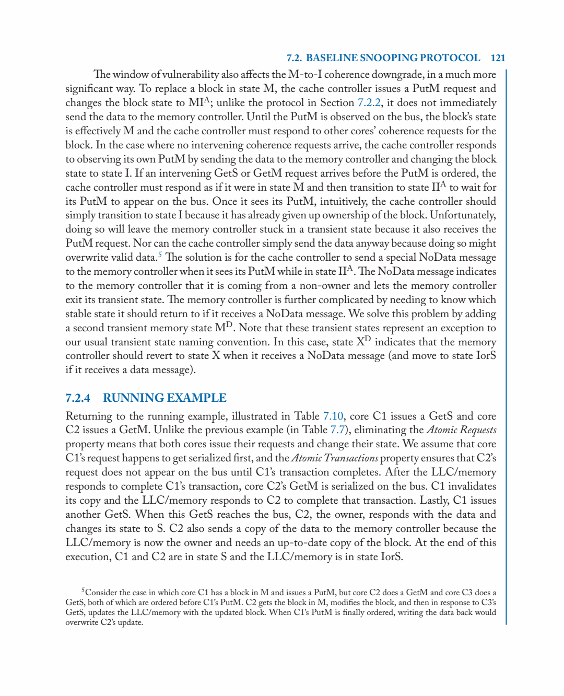
原书第 122 页PDF 144
展开可搜索的英文文字
Request on Cycle Core C1 Core C2 LLC/memory Data on Bus Bus 1 Issue GetS/ISAD 2 Issue GetM/IMAD 3 GetS (C1) -/ISD Send data to 4 C1/IorS Data from 5 LLC/mem Copy data from GetM (C2) 6 LLC/mem/S -/I -/IMD Send data to 7 C2/M Data from 8 LLC/mem Copy data from 9 LLC/mem/M 10 Issue GetS/ISAD 11 GetS (C1) -/ISD Send data to C1 and -/IorSD 12 to LLC/mem/S Data from 13 C2 Copy data from Copy data 14 C2/S from C2/IorSENGLISH7.2.5 PROTOCOL SIMPLIFICATIONS This protocol is relatively straightforward and sacrifices performance to achieve this simplicity. The most significant simplification is the use of atomic transactions on the bus. Having atomic transactions eliminates many possible transitions, denoted by “(A)” in the tables. For example, when a core has a cache block in state IMD, it is not possible for that core to observe a coherence request for that block from another core. If transactions were not atomic, such events could occur and would force us to redesign the protocol to handle them, as we show in Section 7.5.
中文7.2.5 协议的简化
该协议比较直接，以牺牲性能换取简单性。最重要的简化是总线事务的原子性，它排除了表中用“（A）”表示的许多转移。例如，某核的块处于 IMᴰ 时，不可能观察到其他核针对该块的请求。若事务不再原子，这些事件就可能发生，必须重新设计协议来处理，7.5 节将展示这一点。
该协议比较直接，以牺牲性能换取简单性。最重要的简化是总线事务的原子性，它排除了表中用“（A）”表示的许多转移。例如，某核的块处于 IMᴰ 时，不可能观察到其他核针对该块的请求。若事务不再原子，这些事件就可能发生，必须重新设计协议来处理，7.5 节将展示这一点。
查看 原书第 122 页 的完整原版面（PDF 144）
原书第 123 页PDF 145
ENGLISHAnother notable simplification that sacrifices performance involves the event of a store request to a cache block in state S. In this protocol, the cache controller issues a GetM and changes the block state to SMAD. A higher performance but more complex solution would use an upgrade transaction, as discussed in the earlier sidebar.
中文另一项牺牲性能的简化是处理 S 块的 store 请求。本协议发出 GetM 并转为 SMᴬᴰ。更高效但也更复杂的办法是采用 Upgrade 事务，前述旁栏已经讨论。
ENGLISH7.3 ADDING THE EXCLUSIVE STATE
中文7.3 增加独占态
ENGLISHThere are many important protocol optimizations, which we discuss in the next several sections. More casual readers may want to skip or skim these sections on first reading. One very commonly used optimization is to add the Exclusive (E) state, and in this section, we describe how to create a MESI snooping protocol by augmenting the baseline protocol from Section 7.2.3 with the E state. Recall from Chapter 6 that if a cache has a block in the Exclusive state, then the block is valid, read-only, clean, exclusive (not cached elsewhere), and owned. A cache controller may silently change a cache block’s state from E to M without issuing a coherence request.
中文接下来几节讨论多项重要协议优化。只希望总体了解的读者，初读时可以跳过或略读这些内容。一项非常常见的优化是加入 Exclusive（E，独占态）。本节以 7.2.3 节的基准协议为基础，增加 E，构造 MESI 监听协议。回顾第 6 章：缓存中的 E 块有效、只读、干净、独占（未被其他缓存保存），并具有所有权。缓存控制器可静默地将其从 E 转为 M，无须发出缓存一致性请求。
ENGLISH7.3.1 MOTIVATION The Exclusive state is used in almost all commercial coherence protocols because it optimizes a common case. Compared to an MSI protocol, a MESI protocol offers an important advantage in the situation in which a core first reads a block and then subsequently writes it. This is a typical sequence of events in many important applications, including single-threaded applications. In an MSI protocol, on a load miss, the cache controller will initiate a GetS transaction to obtain read permission; on the subsequent store, it will then initiate a GetM transaction to obtain write permission. However, a MESI protocol enables the cache controller to obtain the block in state E, instead of S, in the case that the GetS occurs when no other cache has access to the block. Thus, a subsequent store does not require the GetM transaction; the cache controller can silently upgrade the block’s state from E to M and allow the core to write to the block. The E state can thus eliminate half of the coherence transactions in this common scenario.
中文7.3.1 动机
几乎所有商用缓存一致性协议都采用独占态，因为它能优化一种常见情况：某核先读一个块，随后再写它。许多重要应用，包括单线程应用，都经常出现这种操作序列。MSI 协议在 load 未命中时发起 GetS 获取读权限；随后的 store 再发起 GetM 获取写权限。而 MESI 中，如果 GetS 发生时其他缓存都无权访问该块，就可以获得 E 状态而非 S 状态。因此，后续 store 不需要 GetM；控制器可静默地 E→M，允许核写入。E 状态由此可将这一常见场景中的缓存一致性事务数量减少一半。
几乎所有商用缓存一致性协议都采用独占态，因为它能优化一种常见情况：某核先读一个块，随后再写它。许多重要应用，包括单线程应用，都经常出现这种操作序列。MSI 协议在 load 未命中时发起 GetS 获取读权限；随后的 store 再发起 GetM 获取写权限。而 MESI 中，如果 GetS 发生时其他缓存都无权访问该块，就可以获得 E 状态而非 S 状态。因此，后续 store 不需要 GetM；控制器可静默地 E→M，允许核写入。E 状态由此可将这一常见场景中的缓存一致性事务数量减少一半。
ENGLISH7.3.2 GETTING TO THE EXCLUSIVE STATE Before explaining how the protocol works, we must first figure out how the issuer of a GetS determines that there are no other sharers and thus that it is safe to go directly to state E instead of state S. There are at least two possible solutions:
中文7.3.2 如何进入独占态
介绍协议之前，必须先说明 GetS 发起方如何判断没有其他共享者，从而安全地直接进入 E 而非 S。至少有两种方法：
介绍协议之前，必须先说明 GetS 发起方如何判断没有其他共享者，从而安全地直接进入 E 而非 S。至少有两种方法：
ENGLISH• Adding a wired-OR “sharer” signal to bus: when the GetS is ordered on the bus, all cache controllers that share the block assert the “sharer” signal. If the requestor of the GetS observes that the “sharer” signal is asserted, the requestor changes its block state to S; else, the requestor changes its block state to E. The drawback to this solution is having to implement the wired-OR signal. This additional shared wire might not be problematic in this baseline snooping system model that already has a shared wire bus, but it would greatly complicate implementations that do not use shared wire buses (Section 7.6).
中文• 在总线上加入线或“sharer”信号：GetS 在总线上排序时，所有共享该块的缓存控制器均置位 sharer。若 GetS 请求方观察到该信号有效，就转为 S；否则转为 E。缺点是必须实现线或信号。对于已经具有共享导线总线的基准模型，额外的共享线可能不难处理，但对不采用共享导线总线的实现（7.6 节），会显著增加复杂度。
查看 原书第 123 页 的完整原版面（PDF 145）
原书第 124 页PDF 146
ENGLISH• Maintaining extra state at the LLC: an alternative solution is for the LLC to distinguish between states I (no sharers) and S (one or more sharers), which was not needed for the MSI protocols. In state I, the memory controller responds with data that is specially labeled as being Exclusive; in state S, the memory controller responds with data that is unlabeled. However, maintaining the S state exactly is challenging, since the LLC must detect when the last sharer relinquishes its copy. First, this requires that a cache controller issues a PutS message when it evicts a block in state S. Second, the memory controller must maintain a count of the sharers as part of the state for that block. This is much more complex and bandwidth intensive than our previous protocols, which allowed for silent evictions of blocks in S. A simpler, but less complete, alternative allows the LLC to conservatively track sharers; that is, the memory controller’s state S means that there are zero-or-more caches in state S. The cache controller silently replaces blocks in state S, and thus the LLC stays in S even after the last sharer has been replaced. If a block in state M is written back (with a PutM), the state of the LLC block becomes I. This “conservative S” solution forgoes some opportunities to use the E state (i.e., when the last sharer replaces its copy before another core issues a GetM), but it avoids the need for explicit PutS transactions and still captures many important sharing patterns.
中文• 在 LLC 维护额外状态：另一种方法是让 LLC 区分 I（无共享者）与 S（有一个或多个共享者），而 MSI 无须这样区分。I 下，内存控制器返回带有 Exclusive 专门标记的数据；S 下，返回没有该标记的数据。但精确维护 S 很困难，因为 LLC 必须检测最后一个共享者何时放弃副本。首先，这要求缓存驱逐 S 块时发出 PutS；其次，内存控制器必须在每个块的状态中维护共享者计数。与允许静默驱逐 S 块的前述协议相比，这更复杂，也消耗更多带宽。更简单但不完全精确的方法是保守跟踪共享者，即内存控制器的 S 表示零个或多个缓存为 S。缓存可静默替换 S 块，因此即使最后一个共享者被替换，LLC 仍保持 S。M 块通过 PutM 写回时，LLC 块转为 I。这种“保守 S”会错失某些使用 E 的机会，例如最后一个共享者在另一个核发出 GetM 之前已替换其副本，但它不需要显式 PutS，仍能覆盖许多重要共享模式。
ENGLISHIn the MESI protocol we present in this section, we choose the most implementable option—maintaining a conservative S state at the LLC—to both avoid the engineering problems associated with implementing wired-OR signals in high-speed buses and avoid explicit PutS transactions.
中文本节 MESI 选择最容易实现的方案，即在 LLC 维护保守 S，既避免高速总线上实现线或信号的工程难题，也避免显式 PutS 事务。
ENGLISH7.3.3 HIGH-LEVEL SPECIFICATION OF PROTOCOL In Figures 7.4 and 7.5, we show the transitions between stable states in the MESI protocol. The MESI protocol differs from the baseline MSI protocol at both the cache and LLC/memory. At the cache, a GetS request transitions to S or E, depending upon the state at the LLC/memory when the GetS is ordered. Then, from state E, the block can be silently changed to M. In this protocol, we use a PutM to evict a block in E, instead of using a separate PutE; this decision helps keep the protocol specification concise, and it has no impact on the protocol functionality. The LLC/memory has one more stable state than in the MSI protocol. The LLC/memory must now distinguish between blocks that are shared by zero or more caches (the conservative S state) and those that are not shared at all (I), instead of merging those into one single state as was done in the MSI protocol. In this primer, we consider the E state to be an ownership state, which has a significant effect on the protocol. There are, however, protocols that do not consider the E state to be an ownership state, and the sidebar discusses the issues involved in such protocols.
中文7.3.3 协议高层规约
图 7.4、7.5 展示 MESI 的稳定状态转移。MESI 在缓存和 LLC/内存两侧均不同于基准 MSI。缓存收到 GetS 后，根据该请求排序时 LLC/内存的状态转为 S 或 E；随后 E 可以静默转为 M。本协议用 PutM 驱逐 E 块，而不单独引入 PutE，这有助于保持规约简洁，不影响功能。LLC/内存比 MSI 多一种稳定状态：必须区分被零个或多个缓存共享的块（保守 S）与完全未共享的块（I），不能再像 MSI 那样合并为单一状态。本书将 E 视为具有所有权的状态，这会显著影响协议。有些协议则不把 E 视为所有权状态，相关问题见旁栏。
图 7.4、7.5 展示 MESI 的稳定状态转移。MESI 在缓存和 LLC/内存两侧均不同于基准 MSI。缓存收到 GetS 后，根据该请求排序时 LLC/内存的状态转为 S 或 E；随后 E 可以静默转为 M。本协议用 PutM 驱逐 E 块，而不单独引入 PutE，这有助于保持规约简洁，不影响功能。LLC/内存比 MSI 多一种稳定状态：必须区分被零个或多个缓存共享的块（保守 S）与完全未共享的块（I），不能再像 MSI 那样合并为单一状态。本书将 E 视为具有所有权的状态，这会显著影响协议。有些协议则不把 E 视为所有权状态，相关问题见旁栏。
查看 原书第 124 页 的完整原版面（PDF 146）
原书第 125 页PDF 147
ENGLISHSidebar: MESI Snooping if E is Non-ownership State If the E state is not considered an ownership state (i.e., a block in E is owned by the LLC/memory), then the protocol must figure out which coherence controller should respond to a request after the memory controller has given a block to a cache in state E. Be-
中文旁栏：E 不具有所有权时的 MESI 监听协议
如果 E 不被视为所有权状态，即 E 块仍由 LLC/内存拥有，那么内存控制器将块授予某缓存为 E 之后，协议必须确定谁应响应后续请求。由
如果 E 不被视为所有权状态，即 E 块仍由 LLC/内存拥有，那么内存控制器将块授予某缓存为 E 之后，协议必须确定谁应响应后续请求。由
查看 原书第 125 页 的完整原版面（PDF 147）
原书第 126 页PDF 148
ENGLISHcause the transition from state E to state M is silent, the memory controller cannot know whether the cache holds the block in E, in which case the LLC/memory is the owner, or in M, in which case the cache is the owner. If a GetS or GetM is serialized on the bus at this point, the cache can easily determine whether it is the owner and should respond, but the memory controller cannot make this same determination.
中文于 E→M 是静默的，内存控制器无法知道缓存中的块仍为 E（此时 LLC/内存是所有者），还是已成为 M（此时缓存是所有者）。若此时 GetS 或 GetM 在总线上串行化，缓存可以容易地判断自己是否为所有者、是否应响应，而内存控制器无法作出相同判断。
ENGLISHOne solution to this problem is to have the LLC/memory wait for the cache to respond. When a GetS or GetM is serialized on the bus, a cache with the block in state M responds with data. The memory controller waits a fixed amount of time and, if no response appears in that window of time, the memory controller deduces that it is the owner and that it must respond. If a response from a cache does appear, the memory controller does not respond to the coherence request. This solution has a couple drawbacks, including potentially increased latency for responses from memory. Some implementations hide some or all of this latency by speculatively prefetching the block from memory, at the expense of increased memory bandwidth, power, and energy. A more significant drawback is having to design the system such that the caches’ response latency is predictable and short.
中文一种解决办法是让 LLC/内存先等待缓存响应。GetS 或 GetM 在总线上串行化时，持有 M 块的缓存会返回数据。内存控制器等待固定时间，若此窗口中没有响应，就推断自己是所有者并必须响应；若出现缓存响应，则不再响应。该方法有一些缺点，包括可能增加内存响应延迟。某些实现通过推测性地从内存预取该块隐藏部分或全部延迟，代价是增加内存带宽、功率和能耗。更大的缺点是，系统必须保证缓存响应延迟可预测且足够短。
ENGLISH7.3.4 DETAILED SPECIFICATION In Tables 7.11 and 7.12, we present the detailed specification of the MESI protocol, including transient states. Differences with respect to the MSI protocol are highlighted with boldface font. The protocol adds to the set of cache states just the stable E state and the transient state EIA, but there are several more LLC/memory states, including an extra transient state. This MESI protocol shares all of the same simplifications present in the baseline MSI protocol. Coherence transactions are still atomic, etc.
中文7.3.4 详细规约
表 7.11、7.12 给出包含瞬态的 MESI 详细规约，与 MSI 的差异用粗体标出。缓存状态仅增加稳定态 E 和瞬态 EIᴬ，但 LLC/内存增加了数种状态，其中包括一种额外瞬态。该 MESI 保留基准 MSI 的全部简化，例如缓存一致性事务仍然具有原子性。
表 7.11、7.12 给出包含瞬态的 MESI 详细规约，与 MSI 的差异用粗体标出。缓存状态仅增加稳定态 E 和瞬态 EIᴬ，但 LLC/内存增加了数种状态，其中包括一种额外瞬态。该 MESI 保留基准 MSI 的全部简化，例如缓存一致性事务仍然具有原子性。
ENGLISH7.3.5 RUNNING EXAMPLE We now return to the running example, illustrated in Table 7.13. The execution differs from the MSI protocol almost immediately. When C1’s GetS appears on the bus, the LLC/memory is in state I and can thus send C1 Exclusive data. C1 observes the Exclusive data on the bus and changes its state to E (instead of S, as in the MSI protocol). The rest of the execution proceeds similarly to the MSI example, with minor transient state differences.
中文7.3.5 贯穿示例
回到表 7.13 的示例，它几乎从一开始就与 MSI 不同。C1 的 GetS 出现在总线上时，LLC/内存为 I，因此可以向 C1 发送 Exclusive 数据。C1 看到这一数据后转为 E，而非 MSI 中的 S。其余执行与 MSI 类似，仅有少量瞬态差别。
回到表 7.13 的示例，它几乎从一开始就与 MSI 不同。C1 的 GetS 出现在总线上时，LLC/内存为 I，因此可以向 C1 发送 Exclusive 数据。C1 看到这一数据后转为 E，而非 MSI 中的 S。其余执行与 MSI 类似，仅有少量瞬态差别。
ENGLISH7.4 ADDING THE OWNED STATE
中文7.4 增加拥有态
ENGLISHA second important optimization is the Owned state, and in this section, we describe how to create a MOSI snooping protocol by augmenting the baseline protocol from Section 7.2.3 with the O state. Recall from Chapter 6 that if a cache has a block in the Owned state, then the block is valid, read-only, dirty, and the cache is the owner, i.e., the cache must respond to
中文第二项重要优化是 Owned（O，拥有态）。本节在 7.2.3 节基准协议中加入 O，构造 MOSI 监听协议。回顾第 6 章：缓存中的 O 块有效、只读、为脏，而且缓存是所有者，即必须响应
查看 原书第 126 页 的完整原版面（PDF 148）
原书第 127 页PDF 149
展开可搜索的英文文字
daoL erotS tnemecalpeR SteGnwO MteGnwO MtuP-nwO SteG-rehtO MteG-rehtO MtuP-rehtO esnopseR ataD nwO esnopseR ataD nwO )evisulcxe( Issue Issue I GetS/ GetM/ - - -展开可搜索的英文文字
ISAD IMAD ISAD Stall Stall Stall -/ISD - - - ISD Stall Stall Stall (A) (A) (A) -/S -/E IMAD Stall Stall Stall -/IMD - - - IMD Stall Stall Stall (A) (A) (A) -/M Issue S Hit GetM/ -/I - -/I - SMAD SMAD Hit Stall Stall -/SMD - -/IMAD - SMD Hit Stall Stall (A) (A) -/M Send data Issue Send data to requestor E Hit Hit/M PutM/ to and to EIA requestor/I memory/S Send data Issue to requestor Send data to M Hit Hit PutM/ and to requestor/I MIA memory/S Send data Send data to Send data to to requestor MIA Hit Hit Stall requestor/ memory/I and to IIA memory/IIA Send data Send No- Send data to to requestor EIA Hit Stall Stall Data-E to requestor/ and to memory/I IIA memory/IIA Send No- IIA Stall Stall Stall Data to - - memory/I查看 原书第 127 页 的完整原版面（PDF 149）
原书第 128 页PDF 150
展开可搜索的英文文字
GetS GetM PutM Data NoData NoData-E Send data to requestor Send data to requestor I -/ID /EorM /EorM Send data to requestor S Send data to requestor -/SD /EorM EorM -/SD - -/EorMD Write data to ID (A) (A) (A) -/I -/I memory/I Write data to SD (A) (A) (A) -/S -/S memory/S Write data to EorMD (A) (A) (A) -/EorM -/I memory/IENGLISHcoherence requests for the block. We maintain the same system model as the baseline snooping MSI protocol; transactions are atomic but requests are not atomic.
中文针对该块的缓存一致性请求。系统模型保持与基准 MSI 监听协议相同：事务原子，请求非原子。
ENGLISH7.4.1 MOTIVATION Compared to an MSI or MESI protocol, adding the O state is advantageous in one specific and important situation: when a cache has a block in state M or E and receives a GetS from another core. In the MSI protocol of Section 7.2.3 and the MESI protocol of Section 7.3, the cache must change the block state from M or E to S and send the data to both the requestor and the memory controller. The data must be sent to the memory controller because the responding cache relinquishes ownership (by downgrading to state S) and the LLC/memory becomes the owner and thus must thus have an up-to-date copy of the data with which to respond to subsequent requests.
中文7.4.1 动机
相对于 MSI 或 MESI，增加 O 对一种特定且重要的情况很有益：缓存持有 M 或 E 块时，收到另一个核的 GetS。7.2.3 节的 MSI 和 7.3 节的 MESI 都要求该缓存从 M 或 E 降为 S，并向请求方和内存控制器同时发送数据。之所以必须向内存发送数据，是因为响应缓存降为 S 后放弃所有权，LLC/内存成为所有者，必须持有最新副本以响应后续请求。
相对于 MSI 或 MESI，增加 O 对一种特定且重要的情况很有益：缓存持有 M 或 E 块时，收到另一个核的 GetS。7.2.3 节的 MSI 和 7.3 节的 MESI 都要求该缓存从 M 或 E 降为 S，并向请求方和内存控制器同时发送数据。之所以必须向内存发送数据，是因为响应缓存降为 S 后放弃所有权，LLC/内存成为所有者，必须持有最新副本以响应后续请求。
ENGLISHAdding the O state achieves two benefits: (1) it eliminates the extra data message to update the LLC/memory when a cache receives a GetS request in the M (and E) state, and (2) it eliminates the potentially unnecessary write to the LLC (if the block is written again before being written back to the LLC). Historically, for multi-chip multiprocessors, there was a third benefit, which was that the O state allows subsequent requests to be satisfied by the cache instead of by the far-slower memory. Today, in a multicore with an inclusive LLC, as in the system model in this primer, the access latency of the LLC is not nearly as long as that of off-chip DRAM memory. Thus, having a cache respond instead of the LLC is not as big of a benefit as having a cache respond instead of memory.
中文增加 O 带来两个好处：（1）缓存在 M（以及 E）下收到 GetS 时，无须再用额外数据消息更新 LLC/内存；（2）若块在写回 LLC 前又被写入，就避免了一次可能多余的 LLC 写操作。历史上的多芯片多处理器还有第三个好处：后续请求可由缓存响应，而不必访问慢得多的内存。如今，本书模型所采用的带包含式 LLC 的多核系统中，LLC 延迟远短于片外 DRAM，因此由缓存代替 LLC 响应，其收益不像由缓存代替内存响应那样大。
ENGLISHWe now present a MOSI protocol and show how it achieves these two benefits.
中文下面给出 MOSI 协议，说明它如何实现上述两项收益。
查看 原书第 128 页 的完整原版面（PDF 150）
原书第 129 页PDF 151
展开可搜索的英文文字
Request on Cycle Core C1 Core C2 LLC/memory Data on Bus Bus 1 Issue GetS/ISAD 2 Issue GetM/IMAD 3 GetS (C1) Send exclu- 4 -/ISD sive data to C1/EorM Exclusive 5 data from LLC/mem Copy data from 6 GetM (C2) LLC/mem /E 7 Send data to C2/I -/MD -/EorM 8 Data from C1 Copy data from 9 C1/M 10 Issue GetS/ISAD 11 GetS (C1) Send data to C1 12 -/ISD and to -/SD LLC/mem /S 13 Data from C2 Copy data from Copy data 14 C2/S from C2/SENGLISH7.4.2 HIGH-LEVEL PROTOCOL SPECIFICATION We specify a high-level view of the transitions between stable states in Figures 7.6 and 7.7. The key difference is what happens when a cache with a block in state M receives a GetS from another core. In a MOSI protocol, the cache changes the block state to O (instead of S) and retains ownership of the block (instead of transferring ownership to the LLC/memory). Thus, the O state enables the cache to avoid updating the LLC/memory.
中文7.4.2 协议高层规约
图 7.6、7.7 展示稳定状态转移的高层视图。关键区别在于 M 块收到其他核 GetS 时的处理。MOSI 中，缓存将块改为 O，而非 S，并保留所有权，而非转交 LLC/内存。因此，O 允许缓存避免更新 LLC/内存。
图 7.6、7.7 展示稳定状态转移的高层视图。关键区别在于 M 块收到其他核 GetS 时的处理。MOSI 中，缓存将块改为 O，而非 S，并保留所有权，而非转交 LLC/内存。因此，O 允许缓存避免更新 LLC/内存。
查看 原书第 129 页 的完整原版面（PDF 151）
原书第 130 页PDF 152
ENGLISH7.4.3 DETAILED PROTOCOL SPECIFICATION In Tables 7.14 and 7.15, we present the detailed specification of the MOSI protocol, including transient states. Differences with respect to the MSI protocol are highlighted with boldface font. The protocol adds two transient cache states in addition to the stable O state. The transient OIA state helps handle replacements of blocks in state O, and the transient OMA state handles upgrades back to state M after a store. The memory controller has no additional transient states, but we rename what had been the M state to MorO because the memory controller does not need to distinguish between these two states.
中文7.4.3 协议详细规约
表 7.14、7.15 给出包含瞬态的 MOSI 详细规约，相对 MSI 的差异以粗体标出。除稳定态 O 外，协议增加两种缓存瞬态：OIᴬ 用于处理 O 块的替换，OMᴬ 用于 store 触发的向 M 升级。内存控制器不增加瞬态，但将原 M 状态改名为 MorO，因为它无须区分这两种状态。
表 7.14、7.15 给出包含瞬态的 MOSI 详细规约，相对 MSI 的差异以粗体标出。除稳定态 O 外，协议增加两种缓存瞬态：OIᴬ 用于处理 O 块的替换，OMᴬ 用于 store 触发的向 M 升级。内存控制器不增加瞬态，但将原 M 状态改名为 MorO，因为它无须区分这两种状态。
查看 原书第 130 页 的完整原版面（PDF 152）
原书第 131 页PDF 153
展开可搜索的英文文字
daoL erotS tnemecalpeR SteG-nwO MteG-nwO MtuP-nwO SteG-rehtO MteG-rehtO MtuP-rehtO esnopseR ataD nwO Issue GetS Issue GetM I - - -展开可搜索的英文文字
/ISAD /IMAD ISAD Stall Stall Stall -/ISD - - - ISD Stall Stall Stall (A) (A) (A) -/S IMAD Stall Stall Stall -/IMD - - - IMD Stall Stall Stall (A) (A) (A) -/M Issue GetM S Hit -/I - -/I - /SMAD SMAD Hit Stall Stall -/SMD - -/IMAD - SMD Hit Stall Stall (A) (A) (A) -/M Issue GetM Issue PutM Send data to Send data to O Hit - /OMA /OIA requestor requestor/I Send data to Send data to OMA Hit Stall Stall -/M requestor requestor /IMAD展开可搜索的英文文字
IssuePutM Send data to Send data to M Hit Hit - /MIA requestor/O requestor/I展开可搜索的英文文字
Send data Send data to Send data to MIA Hit Hit Stall to memory requestor requestor /IIA /I /OIA Send data Send data to Send data to OIA Hit Stall Stall to memory requestor requestor /I /IIA Send No- IIA Stall Stall Stall Data to - - memory/IENGLISHTo keep the specification as concise as possible, we consolidate the PutM and PutO transactions into a single PutM transaction. That is, a cache evicts a block in state O with a PutM. This decision has no impact on the protocol’s functionality, but does help to keep the tabular specification readable.
中文为尽量简化规约，我们把 PutM 和 PutO 合并为一个 PutM，即缓存用 PutM 驱逐 O 块。该决策不影响功能，但有助于提高表格规约的可读性。
ENGLISHThis MOSI protocol shares all of the same simplifications present in the baseline MSI protocol. Coherence transactions are still atomic, etc.
中文该 MOSI 保留基准 MSI 的所有简化，例如缓存一致性事务仍然具有原子性。
查看 原书第 131 页 的完整原版面（PDF 153）
原书第 132 页PDF 154
展开可搜索的英文文字
GetS GetM PutM Data from Owner NoData IorS Send data to Send data to -/IorSD requestor requestor/MorO IorSD (A) (A) Write data to -/IorS memory/IorS MorO - - -/MorOD MorOD (A) (A) Write data to -/MorO memory/IorSENGLISH7.4.4 RUNNING EXAMPLE In Table 7.16, we return to the running example that we introduced for the MSI protocol. The example proceeds identically to the MSI example until C1’s second GetS appears on the bus. In the MOSI protocol, this second GetS causes C2 to respond to C1 and change its state to O (instead of S). C2 retains ownership of the block and does not need to copy the data back to the LLC/ memory (unless and until it evicts the block, not shown).
中文7.4.4 贯穿示例
表 7.16 回到 MSI 引入的示例。在 C1 的第二个 GetS 出现在总线之前，执行与 MSI 完全一致。MOSI 中，第二个 GetS 使 C2 响应 C1 并转为 O，而非 S。C2 保留所有权，无须把数据复制回 LLC/内存，除非此后驱逐该块，图中未显示这种情况。
表 7.16 回到 MSI 引入的示例。在 C1 的第二个 GetS 出现在总线之前，执行与 MSI 完全一致。MOSI 中，第二个 GetS 使 C2 响应 C1 并转为 O，而非 S。C2 保留所有权，无须把数据复制回 LLC/内存，除非此后驱逐该块，图中未显示这种情况。
ENGLISH7.5 NON-ATOMIC BUS
中文7.5 非原子总线
ENGLISHThe baseline MSI protocol, as well as the MESI and MOSI variants, all rely on the Atomic Transactions assumption. This atomicity greatly simplifies the design of the protocol, but it sacrifices performance.
中文基准 MSI 以及 MESI、MOSI 变体都依赖原子事务假设。原子性大幅简化了协议设计，但牺牲了性能。
ENGLISH7.5.1 MOTIVATION The simplest way to implement atomic transactions is to use a shared-wire bus with an atomic bus protocol; that is, all bus transactions consist of an indivisible request-response pair. Having an atomic bus is analogous to having an unpipelined processor core; there is no way to overlap activities that could proceed in parallel. Figure 7.8 illustrates the operation of an atomic bus. Because a coherence transaction occupies the bus until the response completes, an atomic bus trivially implements atomic transactions. However, the throughput of the bus is limited by the sum of the latencies for a request and response (including any wait cycles between request and response, not shown). Considering that a response could be provided by off-chip memory, this latency bottlenecks bus performance.
中文7.5.1 动机
实现原子事务最简单的方法，是采用具有原子总线协议的共享导线总线：每个总线事务由不可分割的请求—响应对组成。原子总线类似未流水化的处理器核，无法重叠本可并行进行的活动。图 7.8 展示其运行方式。由于一个缓存一致性事务一直占用总线到响应完成，原子总线自然满足原子事务。然而，总线吞吐量受请求与响应总延迟限制，其中还包括二者之间的等待周期，图中未画出。响应可能来自片外内存，因此该延迟会成为总线性能瓶颈。
实现原子事务最简单的方法，是采用具有原子总线协议的共享导线总线：每个总线事务由不可分割的请求—响应对组成。原子总线类似未流水化的处理器核，无法重叠本可并行进行的活动。图 7.8 展示其运行方式。由于一个缓存一致性事务一直占用总线到响应完成，原子总线自然满足原子事务。然而，总线吞吐量受请求与响应总延迟限制，其中还包括二者之间的等待周期，图中未画出。响应可能来自片外内存，因此该延迟会成为总线性能瓶颈。
ENGLISHFigure 7.9 illustrates the operation of a pipelined, non-atomic bus. The key advantage is
中文图 7.9 展示了流水化的非原子总线，其关键优势是
ENGLISHnot having to wait for a response before a subsequent request can be serialized on the bus, and thus the bus can achieve much higher bandwidth using the same set of shared wires. How-
中文无须等响应返回，就能在总线上串行化后续请求，从而用同一组共享导线实现高得多的带宽。不过，
查看 原书第 132 页 的完整原版面（PDF 154）
原书第 133 页PDF 155
展开可搜索的英文文字
Request on Cycle Core C1 (C1) Core C2 (C2) LLC/memory Data on Bus Bus 1 Issue GetS/ISAD 2 Issue GetM/IMAD 3 GetS (C1) Send data to 4 -/ISD C1/IorS Data from 5 LLC/mem Copy data from 6 GetM (C2) LLC/mem /S Send data to 7 -/I -/IMD C2/MorO Data from 8 LLC/mem Copy data from 9 LLC/mem /M 10 Issue GetS/ISAD 11 GetS (C1) 12 -/ISD Send data to C1/O -/MorO 13 Data from C2 Copy data from 14 C2/SENGLISHever, implementing atomic transactions becomes much more difficult (but not impossible). The atomic transactions property restricts concurrent transactions to the same block, but not different blocks. The SGI Challenge enforced atomic transactions on a pipelined bus using a fast table lookup to check whether or not another transaction was already pending for the same block.
中文此时实现原子事务会困难得多，但并非不可能。原子事务限制针对同一块的并发事务，而不限制不同块。SGI Challenge 在流水化总线上通过快速查表，检查是否已有针对同一块的未完成事务，从而强制保证原子事务。
ENGLISH7.5.2 IN-ORDER VS. OUT-OF-ORDER RESPONSES One major design issue for a non-atomic bus is whether it is pipelined or split-transaction. A pipelined bus, as illustrated in Figure 7.9, provides responses in the same order as the requests. A
中文7.5.2 顺序响应与乱序响应
非原子总线的一项主要设计选择，是使用流水化总线还是分离事务总线。图 7.9 的流水化总线按请求顺序提供响应。
非原子总线的一项主要设计选择，是使用流水化总线还是分离事务总线。图 7.9 的流水化总线按请求顺序提供响应。
查看 原书第 133 页 的完整原版面（PDF 155）
原书第 134 页PDF 156
展开可搜索的英文文字
Address Bus Request 1 Request 2 Request 3展开可搜索的英文文字
Data Bus Response 1 Response 2 Response 3展开可搜索的英文文字
Address Bus Request 1 Request 2 Request 3 Data Bus Response 1 Response 2 Response 3ENGLISHsplit-transaction bus, illustrated in Figure 7.10, can provide responses in an order different from the request order.
中文图 7.10 的分离事务总线则允许响应顺序不同于请求顺序。
ENGLISHThe advantage of a split-transaction bus, with respect to a pipelined bus, is that a lowlatency response does not have to wait for a long-latency response to a prior request. For example, if Request 1 is for a block owned by memory and not present in the LLC and Request 2 is for a block owned by an on-chip cache, then forcing Response 2 to wait for Response 1, as a pipelined bus would require, incurs a performance penalty.
中文相对于流水化总线，分离事务总线的优势是低延迟响应无须等待先前请求的高延迟响应。例如，请求 1 的块由内存拥有且不在 LLC 中，请求 2 的块由片上缓存拥有；如果像流水化总线那样强制响应 2 等待响应 1，就会造成性能损失。
ENGLISHOne issue raised by a split-transaction bus is matching responses with requests. With an atomic bus, it is obvious that a response corresponds to the most recent request. With a pipelined bus, the requestor must keep track of the number of outstanding requests to determine which message is the response to its request. With a split-transaction bus, the response must carry the identity of the request or the requestor.
中文分离事务总线带来的一个问题是响应与请求的匹配。原子总线上，响应显然对应最近的请求。流水化总线上，请求方必须跟踪尚未完成的请求数量，才能判断哪个消息是自身响应。分离事务总线中，响应必须携带请求或请求方的标识。
ENGLISH7.5.3 NON-ATOMIC SYSTEM MODEL We assume a system like the one illustrated in Figure 7.11. The request bus and the response bus are split and operate independently. Each coherence controller has connections to and from both buses, with the exception that the memory controller does not have a connection to make requests. We draw the FIFO queues for buffering incoming and outgoing messages because it is important to consider them in the coherence protocol. Notably, if a coherence controller stalls when processing an incoming request from the request bus, then all requests behind it
中文7.5.3 非原子系统模型
假设系统如图 7.11：请求总线与响应总线分离，独立运行。每个控制器都有连接两条总线的发送和接收端口，唯一例外是内存控制器没有发出请求的连接。图中画出了缓冲收发消息的 FIFO 队列，因为协议必须考虑它们。特别是，若控制器处理来自请求总线的某条请求时阻塞，该请求之后的所有请求
假设系统如图 7.11：请求总线与响应总线分离，独立运行。每个控制器都有连接两条总线的发送和接收端口，唯一例外是内存控制器没有发出请求的连接。图中画出了缓冲收发消息的 FIFO 队列，因为协议必须考虑它们。特别是，若控制器处理来自请求总线的某条请求时阻塞，该请求之后的所有请求
查看 原书第 134 页 的完整原版面（PDF 156）
原书第 135 页PDF 157
展开可搜索的英文文字
Cache Cache Cache Cache Controller Controller展开可搜索的英文文字
Memory LLC ControllerENGLISH(serialized after the stalled request) will not be processed by that coherence controller until it processes the currently stalled request. These queues are processed in a strict FIFO fashion, regardless of message type or address.
中文即排序在该请求之后的请求，都必须等阻塞请求处理完，才会被该控制器处理。这些队列严格按 FIFO 处理，不区分消息类型或地址。
ENGLISH7.5.4 AN MSI PROTOCOL WITH A SPLIT-TRANSACTION BUS In this section, we modify the baseline MSI protocol for use in a system with a split-transaction bus. Having a split-transaction bus does not change the transitions between stable states, but it has a large impact on the detailed implementation. In particular, there are many more possible transitions.
中文7.5.4 采用分离事务总线的 MSI 协议
本节修改基准 MSI，以适用于分离事务总线系统。分离事务总线不改变稳定状态之间的转移，却会显著影响详细实现，尤其会增加大量可能的转移。
本节修改基准 MSI，以适用于分离事务总线系统。分离事务总线不改变稳定状态之间的转移，却会显著影响详细实现，尤其会增加大量可能的转移。
ENGLISHIn Tables 7.17 and 7.18, we specify the protocol. Several transitions are now possible that were not possible with the atomic bus. For example, a cache can now receive an Other-GetS for a block it has in state ISD. All of these newly possible transitions are for blocks in transient states in which the cache is awaiting a data response; while waiting for the data, the cache first observes another coherence request for the block. Recall from Section 7.1 that a transaction is ordered based on when its request is ordered on the bus, not when the data arrives at the requestor. Thus, in each of these newly possible transitions, the cache has already effectively completed its transaction but just happens to not have the data yet. Returning to our example of ISD, the
中文表 7.17、7.18 给出协议。原子总线下不可能发生的一些转移现在成为可能，例如缓存可能在块处于 ISᴰ 时收到 Other-GetS。这些新转移都涉及等待数据响应的瞬态块：缓存等待数据期间，先观察到另一个针对该块的请求。回顾 7.1 节：事务根据请求在总线上的排序时刻排序，而不是根据数据到达时刻。因此，在这些新转移中，缓存的事务实质上已经完成，只是数据尚未到达。以 ISᴰ 为例，
查看 原书第 135 页 的完整原版面（PDF 157）
原书第 136 页PDF 158
展开可搜索的英文文字
daoL erotS tnemecalpeR ro SteG-nwO MteG-nwO MteG-nwO MtuP-nwO SteG-rehtO MteG-rehtO MtuP-rehtO esnopseR ataD nwO )tseuqer nwo rof( Issue GetS Issue GetM I - - - /ISAD /IMAD ISAD Stall Stall Stall -/ISD - - - -/ISA Load ISD Stall Stall Stall - Stall hit/S Load ISA Stall Stall Stall - hit/S IMAD Stall Stall Stall -/IMD - - - -/IMA Store IMD Stall Stall Stall Stall Stall hit/M Store IMA Stall Stall Stall - hit/M Issue GetM S Hit -/I - -/I /SMAD SMAD Hit Stall Stall -/SMD - -/IMAD -/SMA Store SMD Hit Stall Stall Stall Stall hit/M Store SMA Hit Stall Stall - -/IMA hit/M Send data to Issue requestor and Send data to M Hit Hit PutM to memory requestor /I /MIA /S Send data to Send data Send data to requestor and MIA Hit Hit Stall to re- requestor to memory questor /I /IIA /IIA展开可搜索的英文文字
IIA Stall Stall Stall -/I - - -查看 原书第 136 页 的完整原版面（PDF 158）
原书第 137 页PDF 159
展开可搜索的英文文字
PutM from PutM from GetS GetM Data Owner Non-Owner Send data to Send data to - IorS requestor requestor, set Owner to requestor/M Clear Owner Set Owner to Clear - Write data to M /IorSD requestor Owner/IorSD memory/IorSA Stall Stall Stall - Write data to IorSD memory/IorS Clear Owner - Clear - IorSA /IorS Owner/IorSENGLISHcache block is effectively in S. Thus, the arrival of an Other-GetS in this state requires no action to be taken because a cache with a block in S need not respond to an Other-GetS.
中文缓存块实质上处于 S。因此，此时收到 Other-GetS 无须采取动作，因为 S 块无需响应 Other-GetS。
ENGLISHThe newly possible transitions other than the above example, however, are more complicated. Consider a block in a cache in state IMD when an Other-GetS is observed on the bus. The cache block is effectively in state M and the cache is thus the owner of the block but does not yet have the block’s data. Because the cache is the owner, the cache must respond to the Other-GetS, yet the cache cannot respond until it receives the data. The simplest solution to this situation is for the cache to stall processing of the Other-GetS until the data response arrives for its Own-GetM. At that point, the cache block will change to state M and the cache will have valid data to send to the requestor of the Other-GetS.
中文不过，其他新转移更复杂。例如，块处于 IMᴰ 时观察到 Other-GetS。该块实质上为 M，因此缓存是所有者，但还没有数据。作为所有者它必须响应，却又必须等数据到达才能响应。最简单的办法是阻塞 Other-GetS，直到自身 GetM 的数据响应到达。随后块转为 M，缓存便可将有效数据发送给 Other-GetS 的请求方。
ENGLISHFor the other newly possible transitions, at both the cache controller and the memory controller, we also choose to stall until data arrives to satisfy the in-flight request. This is the simplest approach, but it raises three issues. First, it sacrifices some performance, as we discuss in the next section.
中文对于缓存控制器和内存控制器上的其他新转移，我们也选择阻塞，直到在途请求的数据到达。这是最简单的方法，但会引出三个问题。第一，它牺牲部分性能，下一节将讨论。
ENGLISHSecond, stalling raises the potential of deadlock. If a controller can stall on a message while awaiting another event (message arrival), the architect must ensure that the awaited event will eventually occur. Circular chains of stalls can lead to deadlock and must be avoided. In our protocol in this section, controllers that stall are guaranteed to receive the messages that un-stall them. This guarantee is easy to see because the controller has already seen its own request, the stall only affects the request network, and the controller is waiting for a Data message on the response network.
中文第二，阻塞可能导致死锁。如果控制器等待另一事件（消息到达）时阻塞在某条消息上，架构师必须确保所等待的事件最终一定发生。循环阻塞链可能导致死锁，必须避免。本节协议保证阻塞控制器最终会收到解除阻塞的消息。原因很直观：控制器已经看到自身请求，阻塞只影响请求网络，而它等待的是响应网络上的 Data 消息。
ENGLISHThe third issue raised by stalling coherence requests is that, perhaps surprisingly, it enables a requestor to observe a response to its request before processing its own request. Consider the
中文第三个问题可能令人意外：阻塞请求会使请求方在处理自身请求之前就观察到其响应。考虑
查看 原书第 137 页 的完整原版面（PDF 159）
原书第 138 页PDF 160
ENGLISHexample in Table 7.19. Core C1 issues a GetM for block X and changes the state of X to IMAD. C1 observes its GetM on the bus and changes state to IMD. The LLC/memory is the owner of X and takes a long time to retrieve the data from memory and put it on the bus. In the meanwhile, core C2 issues a GetM for X that gets serialized on the bus but cannot be processed by C1 (i.e., C1 stalls). C1 issues a GetM for block Y that then gets serialized on the bus. This GetM for Y is queued up behind the previously stalled coherence request at C1 (the GetM from C2) and thus C1 cannot process its own GetM for Y. However, the owner, C2, can process this GetM for Y and responds quickly to C1. Thus, C1 can observe the response to its GetM for Y before processing its request. This possibility requires the addition of transient states. In this example, core C1 changes the state of block Y from IMAD to IMA. Similarly, the protocol also needs to add transient states ISA and SMA. In these transient states, in which the response is observed before the request, the block is effectively in the prior state. For example, a block in IMA is logically in state I because the GetM has not been processed yet; the cache controller does not respond to an observed GetS or GetM if the block is in IMA. We contrast IMA with IMD—in IMD, the block is logically in M and the cache controller must respond to observed GetS or GetM requests once data arrives.
中文表 7.19 的示例。C1 对 X 发出 GetM，将 X 转为 IMᴬᴰ；随后观察到自身 GetM，转为 IMᴰ。LLC/内存是 X 的所有者，需要较长时间才能从内存取出数据并放上总线。此间，C2 对 X 发出 GetM 并完成总线排序，但 C1 无法处理它，于是阻塞。C1 又对 Y 发出 GetM，该请求也完成排序，但在 C1 的队列中排在已阻塞的 C2 GetM 后面，因此 C1 无法处理自己的 Y 请求。可是 Y 的所有者 C2 能处理此请求并迅速响应。于是，C1 在处理自身 Y 的 GetM 前就看到了响应。这要求增加瞬态：本例中，C1 把 Y 从 IMᴬᴰ 转为 IMᴬ。同理，还需 ISᴬ 和 SMᴬ。响应先于请求被观察到的这些瞬态，其逻辑状态仍是此前状态。例如 IMᴬ 在逻辑上仍为 I，因为 GetM 尚未处理；因此 IMᴬ 中的缓存不响应观察到的 GetS 或 GetM。相比之下，IMᴰ 在逻辑上为 M，数据到达后必须响应观察到的 GetS 或 GetM。
ENGLISHThis protocol has one other difference with respect to the previous protocols in this chapter, and the difference pertains to PutM transactions. The situation that is handled differently is when a core, say, core C1, issues a PutM, and a GetS or GetM from another core for the same block gets ordered before C1’s PutM. C1 transitions from state MIA to IIA before it observes its own PutM. In the atomic protocols earlier in this chapter, C1 observes its own PutM and sends a NoData message to the LLC/memory. The NoData message informs the LLC/memory that the PutM transaction is complete (i.e., it does not have to wait for data). C1 cannot send a Data message to the LLC/ memory in this situation because C1’s data are stale and the protocol cannot send the LLC/memory stale data that would then overwrite the up-to-date value of the data. In the non-atomic protocols in this chapter, we augment the state of each block in the LLC with a field that holds the identity of the current owner of the block. The LLC updates the owner field of a block on every transaction that changes the block’s ownership. Using the owner field, the LLC can identify situations in which a PutM from a non-owner is ordered on the bus; this is exactly the same situation in which C1 is in state IIA when it observes its PutM. Thus, the LLC knows what happened and C1 does not have to send a NoData message to the LLC. We chose to modify how PutM transactions are handled in the non-atomic protocols, compared to the atomic protocols, for simplicity. Allowing the LLC to directly identify this situation is simpler than requiring the use of NoData messages; with a non-atomic protocol, there can be a large number of NoData messages in the system and NoData messages can arrive before their associated PutM requests.
中文相对于本章之前的协议，该协议对 PutM 的处理也不同。设 C1 发出 PutM，但另一核对同一块的 GetS 或 GetM 先于它排序，则 C1 在看到 Own-PutM 前已从 MIᴬ 转为 IIᴬ。前面的原子协议中，C1 观察到自身 PutM 后会向 LLC/内存发送 NoData，说明 PutM 已结束，无须等待数据。此时不能发送 Data，因为 C1 的数据已经陈旧，可能覆盖内存中的最新值。本章非原子协议为每个 LLC 块增加一个字段，记录当前所有者身份。每次改变块所有权的事务都更新该字段。借助该字段，LLC 可以识别总线上来自非所有者的 PutM；这恰好对应 C1 在 IIᴬ 下观察到自身 PutM 的情形。LLC 因而能自行判断，C1 不再需要发送 NoData。相对于原子协议，我们这样修改 PutM 是为了简化：让 LLC 直接识别，比使用 NoData 更简单，因为非原子协议中可能同时存在大量 NoData，而且它们可能先于关联的 PutM 到达。
查看 原书第 138 页 的完整原版面（PDF 160）
原书第 139 页PDF 161
展开可搜索的英文文字
Request on Data on Cycle Core C1 (C1) Core C2 (C2) LLC/memory Bus Bus X:I X:I X:I Initial Y:I Y:M Y:M X: store miss; issue 1 GetM/IMAD 2 X: GetM (C1) X: process GetM X: process GetM (C1) / X: process GetM (C1) (C1) - LLC miss, 3 IMD - ignore start accessing X from DRAM X: store miss; issue 4 GetM/ IMAD Y: store miss; issue 5 X: GetM (C2) GetM/ IMAD X: process GetM (C2) X: process GetM 6 X: stall on GetM (C2) Y: GetM (C1) / IMD (C2) - ignore Y: process GetM (C1) Y: process GetM 7 Y: queue GetM (C1) - send data to C1/I (C1) - ignore Y: data from 8 C2 Y: write data into cache/ 9 IMA X: LLC miss 10 completes, send data to C1 X: data from 11 LLC X: write data into 12 cache/M; Perform store X: (unstall) process 13 GetM (C2) - send data to C2/I Y: process (in-order) X: data from 14 GetM (C1)/M ; per- C1 form store X: write data into 15 cache/M; perform store查看 原书第 139 页 的完整原版面（PDF 161）
原书第 140 页PDF 162
ENGLISH7.5.5 AN OPTIMIZED, NON-STALLING MSI PROTOCOL WITH A SPLIT-TRANSACTION BUS As mentioned in the previous section, we sacrificed some performance by stalling on the newly possible transitions of the system with the split-transaction bus. For example, a cache with a block in state ISD stalled instead of processing an Other-GetM for that block. However, it is possible that there are one or more requests after the Other-GetM, to other blocks, that the cache could process without stalling. By stalling a request, the protocol stalls all requests after the stalled request and delays those transactions from completing. Ideally, we would like a coherence controller to process requests behind a request that is stalled, but recall that—to support a total order of memory requests—snooping requires coherence controllers to observe and process requests in the order received. Reordering is not allowed.
中文7.5.5 采用分离事务总线的优化非阻塞 MSI 协议
如前节所述，对于分离事务系统中新出现的转移采用阻塞，会牺牲性能。例如 ISᴰ 下遇到 Other-GetM 时选择阻塞，而后面可能还有一个或多个针对其他块、原本无需阻塞的请求。阻塞一个请求会阻塞其后的所有请求，延后这些事务完成。理想情况下，我们希望控制器能处理阻塞请求之后的其他请求，但为了支持内存请求全序，监听协议要求控制器按接收顺序观察并处理请求，不能重排。
如前节所述，对于分离事务系统中新出现的转移采用阻塞，会牺牲性能。例如 ISᴰ 下遇到 Other-GetM 时选择阻塞，而后面可能还有一个或多个针对其他块、原本无需阻塞的请求。阻塞一个请求会阻塞其后的所有请求，延后这些事务完成。理想情况下，我们希望控制器能处理阻塞请求之后的其他请求，但为了支持内存请求全序，监听协议要求控制器按接收顺序观察并处理请求，不能重排。
ENGLISHThe solution to this problem is to process all messages, in order, instead of stalling. Our approach is to add transient states that reflect messages that the coherence controller has received but must remember to complete at a later event. Returning to the example of a cache block in ISD, if the cache controller observes an Other-GetM on the bus, then it changes the block state to ISDI (which denotes “in I, going to S, waiting for data, and when data arrives will go to I”). Similarly, a block in IMD that receives an Other-GetS changes state to IMDS and must remember the requestor of the Other-GetS. When the data arrive in response to the cache’s GetM, the cache controller sends the data to the requestor of the Other-GetS and changes the block’s state to S.
中文解决方法是按序处理所有消息，而不阻塞。我们增加瞬态，记录已经接收、但必须等后续事件发生才能完成处理的消息。例如，块在 ISᴰ 下观察到 Other-GetM 时，转为 ISᴰI，表示“原为 I、将转为 S、正在等数据、数据到达后又将转为 I”。同样，IMᴰ 下收到 Other-GetS 时转为 IMᴰS，并记录该请求的请求方。自身 GetM 的数据到达后，控制器将数据发送给 Other-GetS 请求方，并把块转为 S。
ENGLISHIn addition to the proliferation of transient states, a non-stalling protocol introduces a potential livelock problem. Consider a cache with a block in IMDS that receives the data in response to its GetM. If the cache immediately changes the block state to S and sends the data to the requestor of the Other-GetS, it does not get to perform the store for which it originally issued its GetM. If the core then re-issues the GetM, the same situation could arise again and again, and the store might never perform. To guarantee that this livelock cannot arise, we require that a cache in ISDI, IMDI, IMDS, or IMDSI (or any comparable state in a protocol with additional stable coherence states) perform one load or store to the block when it receives the data for its request.6 After performing one load or store, it may then change state and forward the block to another cache. We defer a more in-depth treatment of livelock to Section 9.3.2.
中文除了瞬态数量增多，非阻塞协议还可能引入活锁。考虑 IMᴰS 中的缓存收到自身 GetM 的数据：若立即转为 S 并将数据发送给 Other-GetS 请求方，它就无法执行最初发出 GetM 所要完成的 store。若再次发出 GetM，同样情况可能反复发生，store 始终无法执行。为保证不会活锁，我们要求 ISᴰI、IMᴰI、IMᴰS 或 IMᴰSI 中的缓存，以及具有更多稳定态协议中的对应状态，在收到请求数据时先对该块执行一次 load 或 store。⁶ 然后才允许改变状态、将块转发给其他缓存。9.3.2 节将更深入地讨论活锁。
ENGLISHWe present the detailed specification of the non-stalling MSI protocol in Tables 7.20 and 7.21. The most obvious difference is the number of transient states. There is nothing inherently complicated about any of these states, but they do add to the overall complexity of the protocol.
中文表 7.20、7.21 给出非阻塞 MSI 的详细规约。最明显的差别是瞬态数量。单个状态本身并不复杂，但它们确实提高了协议的总体复杂度。
ENGLISHWe have not removed the stalls from the memory controller because it is not feasible. Consider a block in IorSD. The memory controller observes a GetM from core C1 and currently stalls.
中文我们没有消除内存控制器中的阻塞，因为这不可行。考虑 IorSᴰ 块：内存控制器观察到来自 C1 的 GetM，当前做法是阻塞。
ENGLISH6The load or store must be performed if and only if that load or store was the oldest load or store in program order when the coherence request was first issued. We discuss this issue in more detail in Section 9.3.2.
中文⁶ 当且仅当该 load 或 store 在最初发出缓存一致性请求时，是程序顺序中最老的 load 或 store，才必须执行它。9.3.2 节将详细讨论。
查看 原书第 140 页 的完整原版面（PDF 162）
原书第 141 页PDF 163
展开可搜索的英文文字
daoL erotS tnemecalpeR SteG-nwO MteG-nwO MtuP-nwO SteG-rehtO MteG-rehtO MtuP-rehtO ataD nwO esnopseR Issue GetS Issue GetM I - - - /ISAD /IMAD ISAD Stall Stall Stall -/ISD - - - -/ISA ISD Stall Stall Stall - -/ISDI Load hit/S Load ISA Stall Stall Stall - . Hit/S ISD I Stall Stall S tal l - . Load hit/I IMAD Stall Stall Stall -/IMD - . - -/IMA IMD Stall Stall Stall -/IMDS -/IMDI Store hit/M Store IMA Stall Stall Stall - - hit/M Store hit, send IMDI Stall Stall Stall - - data to GetM requestor/I Store hit, send data IMDS Stall Stall Stall - -/IMDSI to GetS requestor and mem/S Store hit, send IMDSI Stall Stall Stall - - data to GetS requestor and mem/I Issue GetM/ S Hit -/I - -/I SMAD SMAD Hit Stall Stall -/SMD - -/IMAD -/SMA SMD Hit Stall Stall -/SMDS -/SMDI Store hit/M Store SMA Hit Stall Stall - -/IMA hit/M Store hit, send SMDI Hit Stall Stall - - data to GetM requestor/I Store hit, send data SMDS Hit Stall Stall - -/SMDSI to GetS requestor and mem/S Store hit, send SMDSI Hit Stall Stall - - data to GetS requestor and mem/I Issue Send data to Send data to M Hit Hit PutM/ requestor and requestor/I MIA to memory/S Send Send data to data to requestor and Send data to MIA Hit Hit Stall requestor to memory requestor/IIA /I /IIA IIA Stall Stall Stall -/I - - -查看 原书第 141 页 的完整原版面（PDF 163）
原书第 142 页PDF 164
展开可搜索的英文文字
PutM from PutM from GetS GetM Data Owner Non-Owner Send data to Send data to requestor, set - IorS requestor Owner to requestor/M Clear Owner Set Owner to requestor Clear Owner - Write data to M /IorSD /IorSD memory/IorSA Write data to IorSD Stall Stall Stall memory/IorS Clear Owner Clear Owner IorS A - - /IorS /IorSENGLISHHowever, it would appear that we could simply change the block’s state to IorSDM while waiting for the data. Yet, while in IorSDM, the memory controller could observe a GetS from core C2. If the memory controller does not stall on this GetS, it must change the block state to IorSDMIorSD. In this state, the memory controller could observe a GetM from core C3. There is no elegant way to bound the number of transient states needed at the LLC/memory to a small number (i.e., smaller than the number of cores) and so, for simplicity, we have the memory controller stall.
中文看起来似乎可以在等待数据时，将块转为 IorSᴰM。然而，在 IorSᴰM 中又可能观察到来自 C2 的 GetS。如果不阻塞，就必须转为 IorSᴰMIorSᴰ；随后又可能看到来自 C3 的 GetM。没有一种简洁办法，能将 LLC/内存所需瞬态数限制在很小的范围内，即少于核数。因此为简化设计，我们仍让内存控制器阻塞。
ENGLISH7.6 OPTIMIZATIONS TO THE BUS INTERCONNECTION NETWORK
中文7.6 总线互连网络的优化
ENGLISHSo far in this chapter we have assumed system models in which there exists a single sharedwire bus for coherence requests and responses or dedicated shared-wire buses for requests and responses. In this section, we explore two other possible system models that enable improved performance.
中文本章此前假设请求与响应共用一条共享导线总线，或分别使用专用共享导线总线。本节考察另外两种能够改善性能的系统模型。
ENGLISH7.6.1 SEPARATE NON-BUS NETWORK FOR DATA RESPONSES We have emphasized the need of snooping systems to provide a total order of broadcast coherence requests. The example in Table 7.2 showed how the lack of a total order of coherence requests can lead to incoherence. However, there is no such need to order coherence responses, nor is there a need to broadcast them. Thus, coherence responses could travel on a separate network that does not support broadcast or ordering. Such networks include crossbars, meshes, tori, butterflies, etc.
中文7.6.1 用独立非总线网络传输数据响应
我们已强调，监听系统必须为广播请求提供全序。表 7.2 展示了缺少请求全序如何导致不一致。但响应既无须排序，也无须广播，因此可以使用独立的、不提供广播或排序功能的网络，例如交叉开关、网格、环面、蝶形网络等。
我们已强调，监听系统必须为广播请求提供全序。表 7.2 展示了缺少请求全序如何导致不一致。但响应既无须排序，也无须广播，因此可以使用独立的、不提供广播或排序功能的网络，例如交叉开关、网格、环面、蝶形网络等。
ENGLISHThere are several advantages to using a separate, non-bus network for coherence responses.
中文采用独立非总线网络传输缓存一致性响应有以下优势。
查看 原书第 142 页 的完整原版面（PDF 164）
原书第 143 页PDF 165
ENGLISH• Implementability: it is difficult to implement high-speed shared-wire buses, particularly for systems with many controllers on the bus. Other topologies can use point-to-point links.
中文• 可实现性：高速共享导线总线很难实现，尤其在总线挂接多个控制器时。其他拓扑可以采用点对点链路。
ENGLISH• Throughput: a bus can provide only one response at a time. Other topologies can have multiple responses in-flight at a time.
中文• 吞吐量：总线一次只能提供一个响应；其他拓扑可以让多个响应同时在途。
ENGLISH• Latency: using a bus for coherence responses requires that each response incur the latency to arbitrate for the bus. Other topologies can allow responses to be sent immediately without arbitration.
中文• 延迟：使用总线发送响应，每次都必须付出总线仲裁延迟；其他拓扑可以无需仲裁而立即发送响应。
ENGLISH7.6.2 LOGICAL BUS FOR COHERENCE REQUESTS Snooping systems require that there exist a total order of broadcast coherence requests. A sharedwire bus for coherence requests is the most straightforward way to achieve this total order of broadcasts, but it is not the only way to do so. There are two ways to achieve the same totally ordered broadcast properties as a bus (i.e., a logical bus) without having a physical bus.
中文7.6.2 用逻辑总线传输缓存一致性请求
监听系统要求广播请求具有全序。共享导线总线是实现这一性质最直接的方式，但并非唯一方式。不使用物理总线，也有两种方法可获得与总线相同的全序广播性质，即构造逻辑总线。
监听系统要求广播请求具有全序。共享导线总线是实现这一性质最直接的方式，但并非唯一方式。不使用物理总线，也有两种方法可获得与总线相同的全序广播性质，即构造逻辑总线。
ENGLISH• Other topologies with physical total order: a shared-wire bus is the most obvious topology for achieving a total order of broadcasts, but other topologies exist. One notable example is a tree with the coherence controllers at the leaves of the tree. If all coherence requests are unicasted to the root of the tree and then broadcast down the tree, then each coherence controller observes the same total order of coherence broadcasts. The serialization point in this topology is the root of the tree. Sun Microsystems used a tree topology in its Starfire multiprocessor [3], which we discuss in detail in Section 7.7.
中文• 具有物理全序的其他拓扑：共享导线总线最直观，但也存在其他拓扑。一个典型例子是树，控制器位于叶节点。所有请求先单播到根，再沿树向下广播，则每个控制器都会观察到相同的广播全序，树根就是串行化点。Sun Microsystems 在 Starfire 多处理器中采用了树形拓扑 [3]，7.7 节将详细介绍。
ENGLISH• Logical total order: a total order of broadcasts can be obtained even without a network topology that naturally provides such an order. The key is to order the requests in logical time. Martin et al. [6] designed a snooping protocol, called Timestamp Snooping, that can function on any network topology. To issue a coherence request, a cache controller broadcasts it to every coherence controller and labels the broadcast with the logical time at which the broadcast message should be ordered. The protocol must ensure that (a) every broadcast has a distinct logical time, (b) coherence controllers process requests in logical time order (even when they arrive out of this order in physical time), and (c) no request at logical time T can arrive at a controller after that controller has passed logical time T. Agarwal et al. proposed a similar scheme called In-Network Snoop Ordering (INSO) [1].
中文• 逻辑全序：即使网络拓扑不天然提供全序，也可获得广播全序，关键是在逻辑时间上排序请求。Martin 等人 [6] 设计的 Timestamp Snooping（时间戳监听）可运行于任意拓扑。缓存控制器把请求广播给所有控制器，并标注该广播应被排序的逻辑时间。协议必须保证：（a）每次广播具有不同的逻辑时间；（b）即使物理到达顺序不同，控制器仍按逻辑时间处理请求；（c）控制器通过逻辑时刻 T 之后，不会再收到属于 T 的请求。Agarwal 等人提出了类似方案 In-Network Snoop Ordering（INSO，网络内监听排序）[1]。
ENGLISHFlashback to Quiz Question 7: A snooping cache coherence protocol requires the cores to communicate on a bus. True or false? Answer: False! Snooping requires a totally ordered broadcast network, but that functionality can be implemented without a physical bus.
中文回顾测验第 7 题：监听式缓存一致性协议要求各核通过总线通信，对还是错？答案：错！监听要求全序广播网络，但无须物理总线也能实现这一功能。
查看 原书第 143 页 的完整原版面（PDF 165）
原书第 144 页PDF 166
ENGLISH7.7 CASE STUDIES
中文7.7 案例研究
ENGLISHWe present two examples of real-world snooping systems: the Sun Starfire E10000 and the IBM Power5.
中文这里介绍两个实际监听系统：Sun Starfire E10000 和 IBM Power5。
ENGLISH7.7.1 SUN STARFIRE E10000 Sun Microsystems’s Starfire E10000 [3] is an interesting example of a commercial system with a snooping protocol. The coherence protocol itself is not that remarkable; the protocol is a typical MOESI snooping protocol with write-back caches. What distinguishes the E10000 is how it was designed to scale up to 64 processors. The architects innovated based on three important observations, which we discuss in turn.
中文7.7.1 SUN STARFIRE E10000
Sun Microsystems 的 Starfire E10000 [3] 是一个有趣的商用监听系统案例。其协议本身并不特别，是配合写回缓存使用的典型 MOESI 监听协议。其独特之处在于如何扩展到 64 个处理器。架构师基于三个重要观察进行了创新，下面依次讨论。
Sun Microsystems 的 Starfire E10000 [3] 是一个有趣的商用监听系统案例。其协议本身并不特别，是配合写回缓存使用的典型 MOESI 监听协议。其独特之处在于如何扩展到 64 个处理器。架构师基于三个重要观察进行了创新，下面依次讨论。
ENGLISHFirst, shared-wire snooping buses do not scale to large numbers of cores, largely due to electrical engineering constraints. In response to this observation, the E10000 uses only pointto-point links instead of buses. Instead of broadcasting coherence requests on physical (sharedwire) buses, the E10000 broadcasts coherence requests on a logical bus. The key insight behind snooping protocols is that they require a total order of coherence requests, but this total order does not require a physical bus. As illustrated in Figure 7.12, the E10000 implements a logical bus as a tree, in which the processors are the leaves. All links in the tree are point-to-point, thus eliminating the need for buses. A processor unicasts a request up to the top of the tree, where it is serialized and then broadcast down the tree. Because of the serialization at the root, the tree provides totally ordered broadcast. A given request may arrive at two processors at different times, which is fine; the important constraint is that the processors observe the same total order of requests.
中文第一，共享导线监听总线难以扩展到大量核，主要受电气工程约束。因此，E10000 完全采用点对点链路代替总线，并在逻辑总线上广播请求。核心认识是：监听协议要求请求全序，但全序不需要物理总线。如图 7.12，E10000 用树构造逻辑总线，处理器位于叶节点，所有树边均为点对点链路。处理器先把请求单播到树顶，在那里串行化，再向下广播。根节点的串行化保证了全序广播。某个请求可以在不同时刻到达两个处理器，这没有问题；关键是各处理器观察到相同的请求全序。
ENGLISHThe second observation made by the E10000 architects is that greater coherence request bandwidth can be achieved by using multiple (logical) buses, while still maintaining a total order of coherence requests. The E10000 has four logical buses, and coherence requests are addressinterleaved across them. A total order is enforced by requiring processors to snoop the logical buses in a fixed, pre-determined order.
中文第二，E10000 架构师发现，可使用多条逻辑总线提高请求带宽，同时维持请求全序。E10000 有四条逻辑总线，请求按地址交错分布；各处理器按预先固定的顺序监听这些总线，从而强制形成全序。
ENGLISHThird, the architects observed that data response messages, which are much larger than request messages, do not require the totally ordered broadcast network required for coherence requests.
中文第三，架构师注意到，数据响应比请求消息大得多，但并不需要请求所要求的全序广播网络。
ENGLISHMany prior snooping systems implemented a data bus, which needlessly provides both broadcasting and total ordering, while limiting bandwidth. To improve bandwidth, the E10000 implements the data network as a crossbar. Once again, there are point-to-point links instead of buses, and the bandwidth of the crossbar far exceeds what would be possible with a bus (physical or logical).
中文许多早期监听系统采用数据总线，不必要地提供广播和全序，同时限制带宽。E10000 为提高带宽，用交叉开关实现数据网络。该网络同样采用点对点链路而非总线，其带宽远高于物理或逻辑总线所能提供的带宽。
ENGLISHThe architecture of the E10000 has been optimized for scalability, and this optimized design requires the architects to reason about non-atomic requests and non-atomic transactions.
中文E10000 为可扩展性进行了架构优化，这要求架构师认真处理非原子请求和非原子事务。
查看 原书第 144 页 的完整原版面（PDF 166）
原书第 145 页PDF 167
展开可搜索的英文文字
Switch Switch Switch SwitchENGLISH7.7.2 IBM POWER5 The IBM Power5 [8] is a 2-core chip in which both cores share an L2 cache. Each Power5 chip has a fabric bus controller (FBC) that enables multiple Power5 chips to be connected together to create larger systems. Large systems contain up to eight nodes, where each node is a multi-chip module (MCM) with four Power5 chips.
中文7.7.2 IBM POWER5
IBM Power5 [8] 是双核芯片，两核共享 L2。每颗芯片都有互连总线控制器（FBC），使多颗 Power5 可以连接成更大系统。大型系统最多有八个节点，每个节点是一个包含四颗 Power5 的多芯片模块（MCM）。
IBM Power5 [8] 是双核芯片，两核共享 L2。每颗芯片都有互连总线控制器（FBC），使多颗 Power5 可以连接成更大系统。大型系统最多有八个节点，每个节点是一个包含四颗 Power5 的多芯片模块（MCM）。
ENGLISHViewed abstractly, the IBM Power5 appears to use a fairly typical MESI snooping protocol implemented atop a split-transaction bus. However, this simplistic description misses several unique features that are worth discussing. In particular, we focus on two aspects: the ring topology of the interconnection network and the addition of novel variants of the MESI coherence states.
中文从抽象层面看，IBM Power5 似乎是在分离事务总线上实现的普通 MESI 监听协议。但这一简单描述遗漏了几个值得讨论的独特特征。这里重点关注两方面：环形互连拓扑，以及 MESI 状态的新变体。
ENGLISHSnooping Coherence on a Ring The Power5 uses an interconnection network that is quite different from what we have discussed thus far, and these differences have important impacts on the coherence protocol. Most significantly, the Power5 connects nodes with three unidirectional rings, which are used for carrying three types of messages: requests, snoop responses/decision messages, and data. Unidirectional rings do not provide a total order, unless all messages are required to start from the same node on the ring, which the Power5 does not. Rather, the requestor sends a request message around the ring and then absorbs the request when it sees it arrive back after traveling the entire ring. Each node observes the request on the ring and every processor in the node determines its snoop
中文环形网络上的监听一致性
Power5 的互连网络与前述网络差异很大，直接影响协议。最显著的是，它用三条单向环连接节点，分别传输请求、监听响应/决策消息和数据。除非要求所有消息都从同一节点出发，否则单向环无法提供全序；Power5 并未施加这一要求。请求方将请求发送到环上，待它绕行一周返回后吸收。每个节点观察环上的请求，该节点的每个处理器分别确定自己的监听
Power5 的互连网络与前述网络差异很大，直接影响协议。最显著的是，它用三条单向环连接节点，分别传输请求、监听响应/决策消息和数据。除非要求所有消息都从同一节点出发，否则单向环无法提供全序；Power5 并未施加这一要求。请求方将请求发送到环上，待它绕行一周返回后吸收。每个节点观察环上的请求，该节点的每个处理器分别确定自己的监听
查看 原书第 145 页 的完整原版面（PDF 167）
原书第 146 页PDF 168
ENGLISHresponse. The first node to observe the request provides a single snoop response that is the aggregated snoop response of all of the processors on that node. A snoop response is not an actual data response, but rather a description of the action the chip or node would take. Without a totally ordered network, the chips/nodes cannot immediately act because they might not make consistent decisions about how to respond. The snoop response travels on the snoop response ring to the next node. This node similarly produces a single snoop response that aggregates the snoop response of the first node plus the snoop responses of all processors on the second node. When the aggregated snoop response of all nodes reaches the requestor chip, the requestor chip determines what every processor should do to respond to the request. The requestor chip broadcasts this decision along the ring to every node. This decision message is processed by every node/chip in the ring, and the node/chip that has been determined to be the one to provide a data response sends that data response on the data ring to the requestor.
中文响应。第一个观察请求的节点，发出一条汇总本节点所有处理器结果的监听响应。监听响应并非实际数据响应，而是描述芯片或节点准备执行的动作。由于网络没有全序，各芯片/节点不能立即行动，否则可能作出不一致的决定。该响应沿监听响应环到达下一节点，后者把前一节点的结果与本节点所有处理器的结果汇总为单一响应。全体节点的汇总响应到达请求芯片后，请求芯片决定每个处理器应如何响应，再沿环广播该决策。环上每个节点/芯片都处理决策消息；被指定提供数据的节点/芯片，通过数据环把数据响应发给请求方。
ENGLISHThis protocol is far more complicated than typical snooping protocols because of the lack of a totally ordered interconnection network. The protocol still has a total logical order of coherence requests, but without a totally ordered network, a node cannot immediately respond to a request because the request’s position in the total order has not yet been determined by when it appears on the network. Despite the complexity, the Power5 design offers the advantages of having only point-to-point links and the simplicity of the ring topology (e.g., routing in a ring is so simple that switching can be faster than for other topologies). There have been other protocols that have exploited ring topologies and explored ordering issues for rings [2, 4, 7].
中文由于缺少全序互连网络，该协议比典型监听协议复杂得多。请求在逻辑上仍有全序，但请求出现在网络上时，其全序位置尚未确定，因此节点不能立即响应。尽管复杂，Power5 的优势是只需要点对点链路，且环形拓扑简单，例如环上的路由极其简单，交换可比其他拓扑更快。其他一些协议也利用环形拓扑并研究其排序问题 [2, 4, 7]。
ENGLISHExtra Variants of Coherence States The Power5 protocol is fundamentally a MESI protocol, but it has several “flavors” of some of these states. We list all of the states in Table 7.22. There are two new states that we wish to highlight. First, there is the SL variant of the Shared state. If an L2 cache holds a block in state SL, it may respond with data to a GetS from a processor on the same node, thus reducing this transaction’s latency and reducing off-chip bandwidth demand; this ability to provide data distinguishes SL from S.
中文缓存一致性状态的额外变体
Power5 本质上是 MESI，但某些状态具有多个“变体”，表 7.22 列出全部状态。这里强调两种新状态。首先是 Shared 的 SL 变体。如果 L2 中的块为 SL，它可向同节点处理器的 GetS 返回数据，降低事务延迟及片外带宽需求。能够提供数据，是 SL 区别于 S 的特征。
Power5 本质上是 MESI，但某些状态具有多个“变体”，表 7.22 列出全部状态。这里强调两种新状态。首先是 Shared 的 SL 变体。如果 L2 中的块为 SL，它可向同节点处理器的 GetS 返回数据，降低事务延迟及片外带宽需求。能够提供数据，是 SL 区别于 S 的特征。
ENGLISHThe other interesting new state is the T(agged) state. A block enters the T state when it is in Modified and receives a GetS request. Instead of downgrading to S, which it would do in a MESI protocol, or O, which it would do in a MOSI protocol, the cache changes the state to T. A block in state T is similar to the O state, in that it has a value that is more recent than the value in memory, and there may or may not be copies of the block in state S in other caches. Like the O state, the block may be read in the T state. Surprisingly, the T state is sometimes described as being a read-write state, which violates the SWMR invariant. Indeed, a store to state T may be performed immediately, and thus indeed violates the SWMR invariant in real (physical) time. However, the protocol still enforces the SWMR invariant in a logical time based on ring-order. Although the details of this ordering are beyond the scope of this primer, we think it helps to think of the T state as a variation on the E state. Recall that the E state allows
中文另一个有趣的新状态是 T（Tagged，标记态）。块在 Modified 下收到 GetS 时进入 T：它既不像 MESI 那样降为 S，也不像 MOSI 那样降为 O。T 与 O 类似，其值比内存更新，其他缓存可能存在 S 副本，也可能不存在。与 O 相同，T 可读取。令人意外的是，T 有时被描述为读写状态，这似乎违反 SWMR。确实，T 下的 store 可以立即执行，在真实物理时间中会违反 SWMR；但协议仍在基于环顺序的逻辑时间中维持该不变量。具体排序细节超出本书范围，将 T 理解为 E 的一种变体有助于理解。回顾 E 允许
查看 原书第 146 页 的完整原版面（PDF 168）
原书第 147 页PDF 169
展开可搜索的英文文字
State Permissions Description I None Invalid S Read-only Shared SL Read-only Shared local data source, but can respond with data to requests from processors in same node (sometimes referred to as F state, as in Intel QuickPath protocol (Section 8.8.4)) S(S) Read-only Shared Me (E) Read-write Exclusive M (M) Read-write Modifi ed Mu Read-write Modifi ed read-write data in response to readonly request T Read-only T M, received GetS. T is sometimes described as being a read-write state, which violates the SWMR invariant since there are also blocks in state S. A better way to think of T is that it is like E: it can immediately transition to M. However, unlike E, this transition is not silent: a store to a block in T state immedidately transitions to M but (atomically) issues an invalidation message on the ring. Although other caches may race with this request, the T state has priority, and thus is guaranteed to be ordered fi rst and thus does not need to wait for the invalidations to complete.ENGLISHa silent transition to M; thus a store to a block in state E may be immediately performed, so long as the state (atomically) transitions to state M. The T state is similar; a store in state T immediately transitions to state M. However, because there may also be copies in state S, a store in state T also causes the immediate issue of an invalidation message on the ring. Other cores may be attempting to upgrade from I or S to M, but the T state acts as the coherence ordering point and thus has priority and need not wait for an acknowledgment. It is not clear that this protocol is sufficient to support strong memory consistency models such as SC and TSO; however, as we discussed in Chapter 5, the Power memory model is one of the weakest memory consistency models. This Tagged state optimizes the common scenario of producerconsumer sharing, in which one thread writes a block and one or more other threads then read that block. The producer can re-obtain read-write access without having to wait as long each time.
中文静默转为 M；因此只要同时原子地改为 M，就可以立即对 E 块执行 store。T 类似，store 会立即将其转为 M。但由于还可能有 S 副本，T 下的 store 也会立即在环上发出无效化消息。其他核可能正在尝试从 I 或 S 升级到 M，不过 T 充当缓存一致性排序点，具有优先权，无须等待确认。该协议是否足以支持 SC、TSO 等强内存一致性模型并不明确；但如第 5 章所述，Power 属于最弱的一类内存一致性模型。Tagged 优化了常见的生产者—消费者共享：一个线程写块，一个或多个其他线程随后读取。生产者每次重新获取读写权限时，无须等待那么久。
查看 原书第 147 页 的完整原版面（PDF 169）
原书第 148 页PDF 170
ENGLISH7.8 DISCUSSION AND THE FUTURE OF SNOOPING
中文7.8 讨论与监听协议的未来
ENGLISHSnooping systems were prevalent in early multiprocessors because of their reputed simplicity and because their lack of scalability did not matter for the relatively small systems that dominated the market. Snooping also offers performance advantages for non-scalable systems because every snooping transaction can be completed with two messages, which we will contrast against the three-message transactions of directory protocols.
中文早期多处理器广泛采用监听系统，因为它以简单著称，且当时市场主流系统规模较小，可扩展性不足并不重要。对不强调扩展性的系统，监听还具有性能优势：每个事务只需两条消息即可完成，下一章将与目录协议的三消息事务对比。
ENGLISHDespite its advantages, snooping is no longer commonly used. Even for small-scale systems, where snooping’s lack of scalability is not a concern, snooping is no longer common. Snooping’s requirement of a totally ordered broadcast network is just too costly, compared to the low-cost interconnection networks that suffice for directory protocols. Furthermore, for scalable systems, snooping is clearly a poor fit. Systems with very large numbers of cores are likely to be bottlenecked by both the interconnection network bandwidth needed to broadcast requests and the coherence controller bandwidth required to snoop every request. For such systems, a more scalable coherence protocol is required, and it is this need for scalability that originally motivated the directory protocols we present in the next chapter.
中文尽管具有这些优点，监听已不再普遍使用。即便是可扩展性不成问题的小型系统，也很少继续采用它。相对于目录协议能够使用的低成本互连，监听要求的全序广播网络过于昂贵。对于可扩展系统，它显然更不合适。核数很大时，广播请求所需的互连带宽，以及监听每个请求所需的控制器带宽，都可能成为瓶颈。这类系统需要可扩展性更好的协议，正是这一需求最初推动了下一章目录协议的发展。
ENGLISHSnooping could be part of the solution though, even for scalable systems. As we will see in Section 9.1.6, one powerful technique for tackling scale is to divide and conquer. For example, a system consisting of multiple multicore chips could be kept coherent using a snooping coherence protocol within a chip and a scalable directory protocol across the chips.
中文不过，即便对于可扩展系统，监听也可以成为解决方案的一部分。9.1.6 节将看到，应对规模问题的一项有效技术是分而治之。例如，多颗多核芯片组成的系统，可以在芯片内部使用监听协议，在芯片之间使用可扩展的目录协议。
ENGLISH7.9 REFERENCES
中文7.9 参考文献
ENGLISH[1] N. Agarwal, L.-S. Peh, and N. K. Jha. In-network snoop ordering (INSO): Snoopy coherence on unordered interconnects. In Proc. of the 14th International Symposium on High-Performance Computer Architecture, pp. 67–78, February 2009. DOI: 10.1109/hpca.2009.4798238. 143
中文[1] N. Agarwal, L.-S. Peh, and N. K. Jha.《网络内监听排序（INSO）：无序互连上的监听式缓存一致性》. In Proc. of the 14th International Symposium on High-Performance Computer Architecture, pp. 67–78, 2009 年 2 月. DOI: 10.1109/hpca.2009.4798238. 引用页：143。
ENGLISH[2] L. A. Barroso and M. Dubois. Cache coherence on a slotted ring. In Proc. of the 20th International Conference on Parallel Processing, August 1991. 146
中文[2] L. A. Barroso and M. Dubois.《时隙环上的缓存一致性》. In Proc. of the 20th International Conference on Parallel Processing, 1991 年 8 月. 引用页：146。
ENGLISH[3] A. Charlesworth. Starfire: Extending the SMP envelope. IEEE Micro, 18(1):39–49, January/February 1998. DOI: 10.1109/40.653032. 143, 144
中文[3] A. Charlesworth.《Starfire：拓展 SMP 的能力边界》. IEEE Micro, 18(1):39–49, 1998 年 1/2 月. DOI: 10.1109/40.653032. 引用页：143、144。
ENGLISH[4] S. Frank, H. Burkhardt, III, and J. Rothnie. The KSR1: Bridging the gap between shared memory and MPPs. In Proc. of the 38th Annual IEEE Computer Society Computer Conference (COMPCON), pp. 285–95, February 1993. DOI: 10.1109/cmpcon.1993.289682. 146
中文[4] S. Frank, H. Burkhardt, III, and J. Rothnie.《KSR1：弥合共享内存与大规模并行处理器之间的鸿沟》. In Proc. of the 38th Annual IEEE Computer Society Computer Conference (COMPCON), pp. 285–95, 1993 年 2 月. DOI: 10.1109/cmpcon.1993.289682. 引用页：146。
ENGLISH[5] M. Galles and E. Williams. Performance optimizations, implementation, and verification of the SGI Challenge multiprocessor. In Proc. of the Hawaii International Conference on System Sciences, 1994. DOI: 10.1109/hicss.1994.323177. 114
中文[5] M. Galles and E. Williams.《SGI Challenge 多处理器的性能优化、实现与验证》. In Proc. of the Hawaii International Conference on System Sciences, 1994. DOI: 10.1109/hicss.1994.323177. 引用页：114。
查看 原书第 148 页 的完整原版面（PDF 170）
原书第 149 页PDF 171
ENGLISH[6] M. M. K. Martin, D. J. Sorin, A. Ailamaki, A. R. Alameldeen, R. M. Dickson, C. J. Mauer, K. E. Moore, M. Plakal, M. D. Hill, and D. A. Wood. Timestamp snooping: An approach for extending SMPs. In Proc. of the 9th International Conference on Architectural Support for Programming Languages and Operating Systems, pp. 25–36, November 2000. DOI: 10.1145/378993.378998. 143
中文[6] M. M. K. Martin, D. J. Sorin, A. Ailamaki, A. R. Alameldeen, R. M. Dickson, C. J. Mauer, K. E. Moore, M. Plakal, M. D. Hill, and D. A. Wood.《时间戳监听：扩展 SMP 的一种方法》. In Proc. of the 9th International Conference on Architectural Support for Programming Languages and Operating Systems, pp. 25–36, 2000 年 11 月. DOI: 10.1145/378993.378998. 引用页：143。
ENGLISH[7] M. R. Marty and M. D. Hill. Coherence ordering for ring-based chip multiprocessors. In Proc. of the 39th Annual IEEE/ACM International Symposium on Microarchitecture, December 2006. DOI: 10.1109/micro.2006.14. 146
中文[7] M. R. Marty and M. D. Hill.《基于环形网络的片上多处理器中的缓存一致性排序》. In Proc. of the 39th Annual IEEE/ACM International Symposium on Microarchitecture, 2006 年 12 月. DOI: 10.1109/micro.2006.14. 引用页：146。
ENGLISH[8] B. Sinharoy, R. N. Kalla, J. M. Tendler, R. J. Eickemeyer, and J. B. Joyner. POWER5 system microarchitecture. IBM Journal of Research and Development, 49(4/5), July/September
中文[8] B. Sinharoy, R. N. Kalla, J. M. Tendler, R. J. Eickemeyer, and J. B. Joyner.《POWER5 系统微架构》. IBM Journal of Research and Development, 49(4/5), 7/9 月，
ENGLISH2005. DOI: 10.1147/rd.494.0505. 145
中文2005 年. DOI: 10.1147/rd.494.0505. 引用页：145。